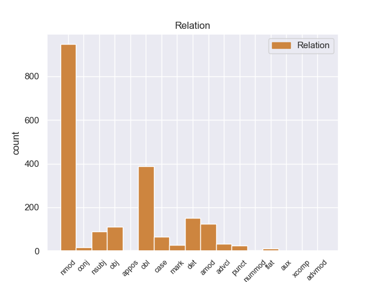
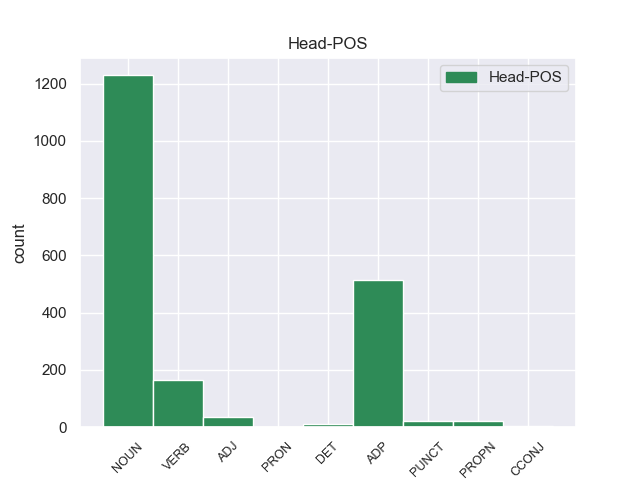
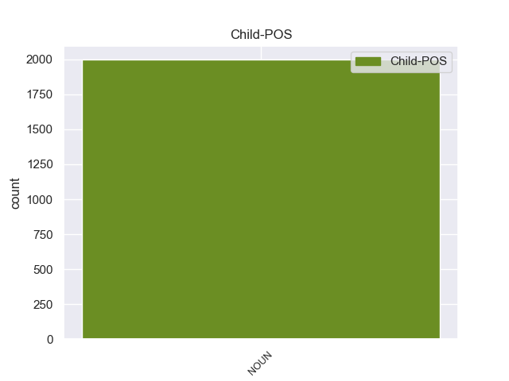

Distribution of features within this leaf



Agreement Rules sorted by frequency.
- When the dependent token is the nominal modifier(nmod) of the head token, and the head token is NOUN and the dependent token is NOUN.
1 A _ _ _ _ 0 _ _ _
2 continuación _ _ _ _ 0 _ _ _
3 , _ _ _ _ 0 _ _ _
4 sonarán _ _ _ _ 0 _ _ _
5 los _ _ _ _ 0 _ _ _
6 ritmos _ _ _ _ 0 _ _ _
7 más _ _ _ _ 0 _ _ _
8 intensos _ _ _ _ 0 _ _ _
9 de _ _ _ _ 0 _ _ _
10 los _ _ _ _ 0 _ _ _
11 llanos _ _ _ _ 0 _ _ _
12 interpretados _ _ _ _ 0 _ _ _
13 por _ _ _ _ 0 _ _ _
14 una _ _ _ _ 0 _ _ _
15 agrupación agrupación NOUN _ Gender=Fem|Number=Sing 0 _ _ _
16 que _ _ _ _ 0 _ _ _
17 romperá _ _ _ _ 0 _ _ _
18 esquemas _ _ _ _ 0 _ _ _
19 : _ _ _ _ 0 _ _ _
20 el _ _ _ _ 0 _ _ _
21 Ensamble _ _ _ _ 0 _ _ _
22 de _ _ _ _ 0 _ _ _
23 Arpas arpas NOUN _ Gender=Fem|Number=Sing 15 nmod _ _
24 de _ _ _ _ 0 _ _ _
25 la _ _ _ _ 0 _ _ _
26 Orquesta _ _ _ _ 0 _ _ _
27 de _ _ _ _ 0 _ _ _
28 Música _ _ _ _ 0 _ _ _
29 Popular _ _ _ _ 0 _ _ _
30 de _ _ _ _ 0 _ _ _
31 el _ _ _ _ 0 _ _ _
32 Estado _ _ _ _ 0 _ _ _
33 Guárico _ _ _ _ 0 _ _ _
34 , _ _ _ _ 0 _ _ _
35 integrado _ _ _ _ 0 _ _ _
36 por _ _ _ _ 0 _ _ _
37 14 _ _ _ _ 0 _ _ _
38 ejecutantes _ _ _ _ 0 _ _ _
39 , _ _ _ _ 0 _ _ _
40 todos _ _ _ _ 0 _ _ _
41 formados _ _ _ _ 0 _ _ _
42 por _ _ _ _ 0 _ _ _
43 El _ _ _ _ 0 _ _ _
44 Sistema _ _ _ _ 0 _ _ _
45 , _ _ _ _ 0 _ _ _
46 siendo _ _ _ _ 0 _ _ _
47 algunos _ _ _ _ 0 _ _ _
48 de _ _ _ _ 0 _ _ _
49 ellos _ _ _ _ 0 _ _ _
50 ganadores _ _ _ _ 0 _ _ _
51 de _ _ _ _ 0 _ _ _
52 el _ _ _ _ 0 _ _ _
53 reconocido _ _ _ _ 0 _ _ _
54 Festival _ _ _ _ 0 _ _ _
55 Internacional _ _ _ _ 0 _ _ _
56 de _ _ _ _ 0 _ _ _
57 Arpas _ _ _ _ 0 _ _ _
58 Infantil _ _ _ _ 0 _ _ _
59 y _ _ _ _ 0 _ _ _
60 Adultos _ _ _ _ 0 _ _ _
61 de _ _ _ _ 0 _ _ _
62 Villavicencio _ _ _ _ 0 _ _ _
63 , _ _ _ _ 0 _ _ _
64 Colombia _ _ _ _ 0 _ _ _
65 . _ _ _ _ 0 _ _ _
1 También _ _ _ _ 0 _ _ _
2 tienen tienen ADP _ Gender=Fem|Number=Sing 0 _ _ _
3 servicio _ _ _ _ 0 _ _ _
4 de _ _ _ _ 0 _ _ _
5 habitaciones habitaciones NOUN _ Gender=Fem|Number=Sing 2 nmod _ _
6 con _ _ _ _ 0 _ _ _
7 unos _ _ _ _ 0 _ _ _
8 precios _ _ _ _ 0 _ _ _
9 fantásticos _ _ _ _ 0 _ _ _
10 . _ _ _ _ 0 _ _ _
1 La _ _ _ _ 0 _ _ _
2 Cabeza _ _ _ _ 0 _ _ _
3 Mediana _ _ _ _ 0 _ _ _
4 se _ _ _ _ 0 _ _ _
5 halla _ _ _ _ 0 _ _ _
6 a _ _ _ _ 0 _ _ _
7 el _ _ _ _ 0 _ _ _
8 norte _ _ _ _ 0 _ _ _
9 de _ _ _ _ 0 _ _ _
10 el _ _ _ _ 0 _ _ _
11 arroyo arroyo NOUN _ Gender=Fem|Number=Sing 41 obl _ _
12 de _ _ _ _ 0 _ _ _
13 Angostura _ _ _ _ 0 _ _ _
14 , _ _ _ _ 0 _ _ _
15 una _ _ _ _ 0 _ _ _
16 de _ _ _ _ 0 _ _ _
17 las _ _ _ _ 0 _ _ _
18 corrientes _ _ _ _ 0 _ _ _
19 fluviales _ _ _ _ 0 _ _ _
20 que _ _ _ _ 0 _ _ _
21 forman _ _ _ _ 0 _ _ _
22 el _ _ _ _ 0 _ _ _
23 río _ _ _ _ 0 _ _ _
24 Lozoya _ _ _ _ 0 _ _ _
25 , _ _ _ _ 0 _ _ _
26 y _ _ _ _ 0 _ _ _
27 a _ _ _ _ 0 _ _ _
28 el _ _ _ _ 0 _ _ _
29 sur _ _ _ _ 0 _ _ _
30 de _ _ _ _ 0 _ _ _
31 el _ _ _ _ 0 _ _ _
32 Monasterio _ _ _ _ 0 _ _ _
33 de _ _ _ _ 0 _ _ _
34 El _ _ _ _ 0 _ _ _
35 Paular _ _ _ _ 0 _ _ _
36 , _ _ _ _ 0 _ _ _
37 de _ _ _ _ 0 _ _ _
38 el _ _ _ _ 0 _ _ _
39 que _ _ _ _ 0 _ _ _
40 le _ _ _ _ 0 _ _ _
41 separan separan ADP _ Gender=Fem|Number=Sing 0 _ _ _
42 unos _ _ _ _ 0 _ _ _
43 cinco _ _ _ _ 0 _ _ _
44 kilómetros _ _ _ _ 0 _ _ _
45 . _ _ _ _ 0 _ _ _
1 La _ _ _ _ 0 _ _ _
2 apariencia apariencia NOUN _ Gender=Masc|Number=Sing 5 obl _ _
3 que _ _ _ _ 0 _ _ _
4 se _ _ _ _ 0 _ _ _
5 observa observa NOUN _ Gender=Masc|Number=Sing 0 _ _ _
6 desde _ _ _ _ 0 _ _ _
7 el _ _ _ _ 0 _ _ _
8 exterior _ _ _ _ 0 _ _ _
9 es _ _ _ _ 0 _ _ _
10 prácticamente _ _ _ _ 0 _ _ _
11 la _ _ _ _ 0 _ _ _
12 misma _ _ _ _ 0 _ _ _
13 hoy _ _ _ _ 0 _ _ _
14 en _ _ _ _ 0 _ _ _
15 día _ _ _ _ 0 _ _ _
16 que _ _ _ _ 0 _ _ _
17 cuando _ _ _ _ 0 _ _ _
18 se _ _ _ _ 0 _ _ _
19 completó _ _ _ _ 0 _ _ _
20 . _ _ _ _ 0 _ _ _
1 En _ _ _ _ 0 _ _ _
2 el _ _ _ _ 0 _ _ _
3 caso _ _ _ _ 0 _ _ _
4 de _ _ _ _ 0 _ _ _
5 estrellas _ _ _ _ 0 _ _ _
6 variables _ _ _ _ 0 _ _ _
7 regulares _ _ _ _ 0 _ _ _
8 , _ _ _ _ 0 _ _ _
9 puede _ _ _ _ 0 _ _ _
10 determinar _ _ _ _ 0 _ _ _
11 se _ _ _ _ 0 _ _ _
12 con _ _ _ _ 0 _ _ _
13 precisión _ _ _ _ 0 _ _ _
14 su _ _ _ _ 0 _ _ _
15 período período NOUN _ Gender=Masc|Number=Sing 0 _ _ _
16 de _ _ _ _ 0 _ _ _
17 variabilidad _ _ _ _ 0 _ _ _
18 y _ _ _ _ 0 _ _ _
19 la _ _ _ _ 0 _ _ _
20 amplitud amplitud NOUN _ Gender=Masc|Number=Sing 15 det _ _
21 de _ _ _ _ 0 _ _ _
22 el _ _ _ _ 0 _ _ _
23 mismo _ _ _ _ 0 _ _ _
24 . _ _ _ _ 0 _ _ _
1 Ningún _ _ _ _ 0 _ _ _
2 otro _ _ _ _ 0 _ _ _
3 autor _ _ _ _ 0 _ _ _
4 ha _ _ _ _ 0 _ _ _
5 hecho _ _ _ _ 0 _ _ _
6 acusaciones _ _ _ _ 0 _ _ _
7 semejantes _ _ _ _ 0 _ _ _
8 de _ _ _ _ 0 _ _ _
9 fracaso fracas NOUN _ Gender=Masc|Number=Sing 0 _ _ _
10 en _ _ _ _ 0 _ _ _
11 la _ _ _ _ 0 _ _ _
12 altitud _ _ _ _ 0 _ _ _
13 o _ _ _ _ 0 _ _ _
14 de _ _ _ _ 0 _ _ _
15 ser _ _ _ _ 0 _ _ _
16 desagradecida _ _ _ _ 0 _ _ _
17 contra _ _ _ _ 0 _ _ _
18 Mauduit _ _ _ _ 0 _ _ _
19 en _ _ _ _ 0 _ _ _
20 este _ _ _ _ 0 _ _ _
21 u _ _ _ _ 0 _ _ _
22 otros _ _ _ _ 0 _ _ _
23 ascensos ascensos NOUN _ Gender=Masc|Number=Sing 9 amod _ _
24 . _ _ _ _ 0 _ _ _
1 Estuve _ _ _ _ 0 _ _ _
2 muchos _ _ _ _ 0 _ _ _
3 años _ _ _ _ 0 _ _ _
4 haciendo _ _ _ _ 0 _ _ _
5 envíos _ _ _ _ 0 _ _ _
6 en _ _ _ _ 0 _ _ _
7 esta _ _ _ _ 0 _ _ _
8 oficina oficina NOUN _ Gender=Fem|Number=Sing 11 obl _ _
9 , _ _ _ _ 0 _ _ _
10 pero _ _ _ _ 0 _ _ _
11 trata trata VERB _ Gender=Fem|Number=Sing 0 _ _ _
12 muy _ _ _ _ 0 _ _ _
13 mal _ _ _ _ 0 _ _ _
14 a _ _ _ _ 0 _ _ _
15 sus _ _ _ _ 0 _ _ _
16 trabajadores _ _ _ _ 0 _ _ _
17 , _ _ _ _ 0 _ _ _
18 gritando _ _ _ _ 0 _ _ _
19 les _ _ _ _ 0 _ _ _
20 mientras _ _ _ _ 0 _ _ _
21 están _ _ _ _ 0 _ _ _
22 los _ _ _ _ 0 _ _ _
23 clientes _ _ _ _ 0 _ _ _
24 alli _ _ _ _ 0 _ _ _
25 y _ _ _ _ 0 _ _ _
26 muchisimas _ _ _ _ 0 _ _ _
27 otras _ _ _ _ 0 _ _ _
28 cosas _ _ _ _ 0 _ _ _
29 . _ _ _ _ 0 _ _ _
1 The _ _ _ _ 0 _ _ _
2 Magician magician NOUN _ Gender=Masc|Number=Sing 0 _ _ _
3 explica _ _ _ _ 0 _ _ _
4 que _ _ _ _ 0 _ _ _
5 no _ _ _ _ 0 _ _ _
6 puede _ _ _ _ 0 _ _ _
7 recibir _ _ _ _ 0 _ _ _
8 órdenes _ _ _ _ 0 _ _ _
9 de _ _ _ _ 0 _ _ _
10 una _ _ _ _ 0 _ _ _
11 criatura criatura NOUN _ Gender=Masc|Number=Sing 2 case _ _
12 inferior _ _ _ _ 0 _ _ _
13 , _ _ _ _ 0 _ _ _
14 como _ _ _ _ 0 _ _ _
15 son _ _ _ _ 0 _ _ _
16 los _ _ _ _ 0 _ _ _
17 seres _ _ _ _ 0 _ _ _
18 humanos _ _ _ _ 0 _ _ _
19 . _ _ _ _ 0 _ _ _
1 Al _ _ _ _ 0 _ _ _
2 final _ _ _ _ 0 _ _ _
3 de _ _ _ _ 0 _ _ _
4 cada _ _ _ _ 0 _ _ _
5 día _ _ _ _ 0 _ _ _
6 él _ _ _ _ 0 _ _ _
7 terminaba terminaba NOUN _ Gender=Masc|Number=Sing 0 _ _ _
8 su _ _ _ _ 0 _ _ _
9 jornada _ _ _ _ 0 _ _ _
10 formando _ _ _ _ 0 _ _ _
11 una _ _ _ _ 0 _ _ _
12 figura _ _ _ _ 0 _ _ _
13 con _ _ _ _ 0 _ _ _
14 mi _ _ _ _ 0 _ _ _
15 bolita bolita NOUN _ Gender=Masc|Number=Sing 7 obj _ _
16 de _ _ _ _ 0 _ _ _
17 barro _ _ _ _ 0 _ _ _
18 la _ _ _ _ 0 _ _ _
19 cual _ _ _ _ 0 _ _ _
20 me _ _ _ _ 0 _ _ _
21 dejaba _ _ _ _ 0 _ _ _
22 como _ _ _ _ 0 _ _ _
23 tarea _ _ _ _ 0 _ _ _
24 , _ _ _ _ 0 _ _ _
25 pues _ _ _ _ 0 _ _ _
26 yo _ _ _ _ 0 _ _ _
27 debía _ _ _ _ 0 _ _ _
28 reproducir _ _ _ _ 0 _ _ _
29 lo _ _ _ _ 0 _ _ _
30 a _ _ _ _ 0 _ _ _
31 el _ _ _ _ 0 _ _ _
32 día _ _ _ _ 0 _ _ _
33 siguiente _ _ _ _ 0 _ _ _
34 . _ _ _ _ 0 _ _ _
1 Por _ _ _ _ 0 _ _ _
2 entonces _ _ _ _ 0 _ _ _
3 el _ _ _ _ 0 _ _ _
4 sistema _ _ _ _ 0 _ _ _
5 operativo _ _ _ _ 0 _ _ _
6 registraba registraba NOUN _ Gender=Masc|Number=Sing 0 _ _ _
7 unas _ _ _ _ 0 _ _ _
8 300.000 _ _ _ _ 0 _ _ _
9 activaciones _ _ _ _ 0 _ _ _
10 diarias _ _ _ _ 0 _ _ _
11 , _ _ _ _ 0 _ _ _
12 una _ _ _ _ 0 _ _ _
13 cifra cifra NOUN _ Gender=Masc|Number=Sing 6 nsubj _ _
14 bastante _ _ _ _ 0 _ _ _
15 maja _ _ _ _ 0 _ _ _
16 teniendo _ _ _ _ 0 _ _ _
17 en _ _ _ _ 0 _ _ _
18 cuenta _ _ _ _ 0 _ _ _
19 además _ _ _ _ 0 _ _ _
20 el _ _ _ _ 0 _ _ _
21 sano _ _ _ _ 0 _ _ _
22 crecimiento _ _ _ _ 0 _ _ _
23 que _ _ _ _ 0 _ _ _
24 había _ _ _ _ 0 _ _ _
25 experimentado _ _ _ _ 0 _ _ _
26 si _ _ _ _ 0 _ _ _
27 estudiábamos _ _ _ _ 0 _ _ _
28 su _ _ _ _ 0 _ _ _
29 trayectoria _ _ _ _ 0 _ _ _
30 durante _ _ _ _ 0 _ _ _
31 sus _ _ _ _ 0 _ _ _
32 últimos _ _ _ _ 0 _ _ _
33 meses _ _ _ _ 0 _ _ _
34 . _ _ _ _ 0 _ _ _
1 El _ _ _ _ 0 _ _ _
2 ingreso ingreso ADP _ Gender=Fem|Number=Sing 0 _ _ _
3 per _ _ _ _ 0 _ _ _
4 cápita _ _ _ _ 0 _ _ _
5 para _ _ _ _ 0 _ _ _
6 la _ _ _ _ 0 _ _ _
7 localidad localidad NOUN _ Gender=Fem|Number=Sing 2 det _ _
8 era _ _ _ _ 0 _ _ _
9 de _ _ _ _ 0 _ _ _
10 $ _ _ _ _ 0 _ _ _
11 14.159 _ _ _ _ 0 _ _ _
12 . _ _ _ _ 0 _ _ _
1 Hay _ _ _ _ 0 _ _ _
2 tristeza _ _ _ _ 0 _ _ _
3 en _ _ _ _ 0 _ _ _
4 nuestros _ _ _ _ 0 _ _ _
5 corazones _ _ _ _ 0 _ _ _
6 pero _ _ _ _ 0 _ _ _
7 acostumbrados _ _ _ _ 0 _ _ _
8 como _ _ _ _ 0 _ _ _
9 estamos _ _ _ _ 0 _ _ _
10 a _ _ _ _ 0 _ _ _
11 estas _ _ _ _ 0 _ _ _
12 bajas bajas NOUN _ Gender=Masc|Number=Sing 30 obj _ _
13 en _ _ _ _ 0 _ _ _
14 nuestro _ _ _ _ 0 _ _ _
15 ejército _ _ _ _ 0 _ _ _
16 de _ _ _ _ 0 _ _ _
17 dignidad _ _ _ _ 0 _ _ _
18 , _ _ _ _ 0 _ _ _
19 te _ _ _ _ 0 _ _ _
20 decimos _ _ _ _ 0 _ _ _
21 adios _ _ _ _ 0 _ _ _
22 Laura _ _ _ _ 0 _ _ _
23 por _ _ _ _ 0 _ _ _
24 la _ _ _ _ 0 _ _ _
25 noche _ _ _ _ 0 _ _ _
26 y _ _ _ _ 0 _ _ _
27 acto _ _ _ _ 0 _ _ _
28 seguido _ _ _ _ 0 _ _ _
29 nos _ _ _ _ 0 _ _ _
30 incorporamos incorporamos ADP _ Gender=Masc|Number=Sing 0 _ _ _
31 a _ _ _ _ 0 _ _ _
32 la _ _ _ _ 0 _ _ _
33 lucha _ _ _ _ 0 _ _ _
34 con _ _ _ _ 0 _ _ _
35 el _ _ _ _ 0 _ _ _
36 amanecer _ _ _ _ 0 _ _ _
37 . _ _ _ _ 0 _ _ _
1 Estuve _ _ _ _ 0 _ _ _
2 muchos _ _ _ _ 0 _ _ _
3 años _ _ _ _ 0 _ _ _
4 haciendo _ _ _ _ 0 _ _ _
5 envíos _ _ _ _ 0 _ _ _
6 en _ _ _ _ 0 _ _ _
7 esta _ _ _ _ 0 _ _ _
8 oficina _ _ _ _ 0 _ _ _
9 , _ _ _ _ 0 _ _ _
10 pero _ _ _ _ 0 _ _ _
11 trata trata VERB _ Gender=Fem|Number=Sing 0 _ _ _
12 muy _ _ _ _ 0 _ _ _
13 mal _ _ _ _ 0 _ _ _
14 a _ _ _ _ 0 _ _ _
15 sus _ _ _ _ 0 _ _ _
16 trabajadores _ _ _ _ 0 _ _ _
17 , _ _ _ _ 0 _ _ _
18 gritando _ _ _ _ 0 _ _ _
19 les _ _ _ _ 0 _ _ _
20 mientras _ _ _ _ 0 _ _ _
21 están _ _ _ _ 0 _ _ _
22 los _ _ _ _ 0 _ _ _
23 clientes clientes NOUN _ Gender=Fem|Number=Sing 11 nmod _ _
24 alli _ _ _ _ 0 _ _ _
25 y _ _ _ _ 0 _ _ _
26 muchisimas _ _ _ _ 0 _ _ _
27 otras _ _ _ _ 0 _ _ _
28 cosas _ _ _ _ 0 _ _ _
29 . _ _ _ _ 0 _ _ _
1 Los _ _ _ _ 0 _ _ _
2 muebles _ _ _ _ 0 _ _ _
3 y _ _ _ _ 0 _ _ _
4 los _ _ _ _ 0 _ _ _
5 objetos _ _ _ _ 0 _ _ _
6 de _ _ _ _ 0 _ _ _
7 decoración _ _ _ _ 0 _ _ _
8 ( _ _ _ _ 0 _ _ _
9 cuadros cuadros NOUN _ Gender=Fem|Number=Sing 16 obj _ _
10 , _ _ _ _ 0 _ _ _
11 fuentes _ _ _ _ 0 _ _ _
12 , _ _ _ _ 0 _ _ _
13 lámparas _ _ _ _ 0 _ _ _
14 también _ _ _ _ 0 _ _ _
15 ) _ _ _ _ 0 _ _ _
16 crean crean VERB _ Gender=Fem|Number=Sing 0 _ _ _
17 un _ _ _ _ 0 _ _ _
18 ambiente _ _ _ _ 0 _ _ _
19 de _ _ _ _ 0 _ _ _
20 paz _ _ _ _ 0 _ _ _
21 y _ _ _ _ 0 _ _ _
22 de _ _ _ _ 0 _ _ _
23 tranquilidad _ _ _ _ 0 _ _ _
24 , _ _ _ _ 0 _ _ _
25 que _ _ _ _ 0 _ _ _
26 me _ _ _ _ 0 _ _ _
27 gustaría _ _ _ _ 0 _ _ _
28 tener _ _ _ _ 0 _ _ _
29 en _ _ _ _ 0 _ _ _
30 mi _ _ _ _ 0 _ _ _
31 casa _ _ _ _ 0 _ _ _
32 . _ _ _ _ 0 _ _ _
1 Muchas _ _ _ _ 0 _ _ _
2 son _ _ _ _ 0 _ _ _
3 las _ _ _ _ 0 _ _ _
4 bocas bocas NOUN _ Gender=Fem|Number=Sing 6 nsubj _ _
5 que _ _ _ _ 0 _ _ _
6 hablan hablan ADP _ Gender=Fem|Number=Sing 0 _ _ _
7 de _ _ _ _ 0 _ _ _
8 su _ _ _ _ 0 _ _ _
9 llegada _ _ _ _ 0 _ _ _
10 y _ _ _ _ 0 _ _ _
11 todo _ _ _ _ 0 _ _ _
12 indica _ _ _ _ 0 _ _ _
13 que _ _ _ _ 0 _ _ _
14 ni _ _ _ _ 0 _ _ _
15 uno _ _ _ _ 0 _ _ _
16 ni _ _ _ _ 0 _ _ _
17 el _ _ _ _ 0 _ _ _
18 otro _ _ _ _ 0 _ _ _
19 serán _ _ _ _ 0 _ _ _
20 los _ _ _ _ 0 _ _ _
21 fichajes _ _ _ _ 0 _ _ _
22 , _ _ _ _ 0 _ _ _
23 por _ _ _ _ 0 _ _ _
24 lo _ _ _ _ 0 _ _ _
25 que _ _ _ _ 0 _ _ _
26 deberán _ _ _ _ 0 _ _ _
27 pensar _ _ _ _ 0 _ _ _
28 en _ _ _ _ 0 _ _ _
29 los _ _ _ _ 0 _ _ _
30 otros _ _ _ _ 0 _ _ _
31 que _ _ _ _ 0 _ _ _
32 llegarían _ _ _ _ 0 _ _ _
33 . _ _ _ _ 0 _ _ _
1 Por _ _ _ _ 0 _ _ _
2 ejemplo _ _ _ _ 0 _ _ _
3 , _ _ _ _ 0 _ _ _
4 en _ _ _ _ 0 _ _ _
5 la _ _ _ _ 0 _ _ _
6 Guerra _ _ _ _ 0 _ _ _
7 de _ _ _ _ 0 _ _ _
8 el _ _ _ _ 0 _ _ _
9 Golfo _ _ _ _ 0 _ _ _
10 los _ _ _ _ 0 _ _ _
11 misiles _ _ _ _ 0 _ _ _
12 de _ _ _ _ 0 _ _ _
13 crucero _ _ _ _ 0 _ _ _
14 fueron _ _ _ _ 0 _ _ _
15 cargados cargados NOUN _ Definite=Def|Gender=Fem|Number=Sing|PronType=Art 0 _ _ _
16 con _ _ _ _ 0 _ _ _
17 filamentos _ _ _ _ 0 _ _ _
18 de _ _ _ _ 0 _ _ _
19 grafito _ _ _ _ 0 _ _ _
20 que _ _ _ _ 0 _ _ _
21 llevados llevados NOUN _ Gender=Fem|Number=Sing 15 mark _ _
22 a _ _ _ _ 0 _ _ _
23 centrales _ _ _ _ 0 _ _ _
24 eléctricas _ _ _ _ 0 _ _ _
25 y _ _ _ _ 0 _ _ _
26 estaciones _ _ _ _ 0 _ _ _
27 de _ _ _ _ 0 _ _ _
28 distribución _ _ _ _ 0 _ _ _
29 de _ _ _ _ 0 _ _ _
30 energía _ _ _ _ 0 _ _ _
31 provocaron _ _ _ _ 0 _ _ _
32 cortocircuitos _ _ _ _ 0 _ _ _
33 . _ _ _ _ 0 _ _ _
1 Jugó _ _ _ _ 0 _ _ _
2 3 _ _ _ _ 0 _ _ _
3 temporadas temporadas NOUN _ Gender=Masc|Number=Sing 17 case _ _
4 con _ _ _ _ 0 _ _ _
5 los _ _ _ _ 0 _ _ _
6 Rockets _ _ _ _ 0 _ _ _
7 , _ _ _ _ 0 _ _ _
8 siendo _ _ _ _ 0 _ _ _
9 la _ _ _ _ 0 _ _ _
10 mejor _ _ _ _ 0 _ _ _
11 de _ _ _ _ 0 _ _ _
12 ellas _ _ _ _ 0 _ _ _
13 la _ _ _ _ 0 _ _ _
14 última _ _ _ _ 0 _ _ _
15 , _ _ _ _ 0 _ _ _
16 la _ _ _ _ 0 _ _ _
17 temporada temporada ADP _ Gender=Masc|Number=Sing 0 _ _ _
18 1970-71 _ _ _ _ 0 _ _ _
19 , _ _ _ _ 0 _ _ _
20 en _ _ _ _ 0 _ _ _
21 la _ _ _ _ 0 _ _ _
22 que _ _ _ _ 0 _ _ _
23 promedió _ _ _ _ 0 _ _ _
24 9,6 _ _ _ _ 0 _ _ _
25 puntos _ _ _ _ 0 _ _ _
26 y _ _ _ _ 0 _ _ _
27 6,2 _ _ _ _ 0 _ _ _
28 rebotes _ _ _ _ 0 _ _ _
29 por _ _ _ _ 0 _ _ _
30 partido _ _ _ _ 0 _ _ _
31 . _ _ _ _ 0 _ _ _
1 Gallery _ _ _ _ 0 _ _ _
2 Hoteles _ _ _ _ 0 _ _ _
3 es _ _ _ _ 0 _ _ _
4 un _ _ _ _ 0 _ _ _
5 grupo _ _ _ _ 0 _ _ _
6 hotelero _ _ _ _ 0 _ _ _
7 independiente _ _ _ _ 0 _ _ _
8 creado _ _ _ _ 0 _ _ _
9 en _ _ _ _ 0 _ _ _
10 2004 _ _ _ _ 0 _ _ _
11 que _ _ _ _ 0 _ _ _
12 actualmente _ _ _ _ 0 _ _ _
13 gestiona gestiona NOUN _ Gender=Fem|Number=Sing 0 _ _ _
14 dos _ _ _ _ 0 _ _ _
15 establecimientos _ _ _ _ 0 _ _ _
16 emblemáticos _ _ _ _ 0 _ _ _
17 por _ _ _ _ 0 _ _ _
18 su _ _ _ _ 0 _ _ _
19 calidad _ _ _ _ 0 _ _ _
20 y _ _ _ _ 0 _ _ _
21 trato trato NOUN _ Gender=Fem|Number=Sing 13 advcl _ _
22 personalizado _ _ _ _ 0 _ _ _
23 : _ _ _ _ 0 _ _ _
24 el _ _ _ _ 0 _ _ _
25 Hotel _ _ _ _ 0 _ _ _
26 Molina _ _ _ _ 0 _ _ _
27 Lario _ _ _ _ 0 _ _ _
28 de _ _ _ _ 0 _ _ _
29 Málaga _ _ _ _ 0 _ _ _
30 y _ _ _ _ 0 _ _ _
31 el _ _ _ _ 0 _ _ _
32 Gallery _ _ _ _ 0 _ _ _
33 Hotel _ _ _ _ 0 _ _ _
34 de _ _ _ _ 0 _ _ _
35 Barcelona _ _ _ _ 0 _ _ _
36 , _ _ _ _ 0 _ _ _
37 inaugurado _ _ _ _ 0 _ _ _
38 en _ _ _ _ 0 _ _ _
39 1991 _ _ _ _ 0 _ _ _
40 y _ _ _ _ 0 _ _ _
41 que _ _ _ _ 0 _ _ _
42 es _ _ _ _ 0 _ _ _
43 un _ _ _ _ 0 _ _ _
44 referente _ _ _ _ 0 _ _ _
45 en _ _ _ _ 0 _ _ _
46 la _ _ _ _ 0 _ _ _
47 ciudad _ _ _ _ 0 _ _ _
48 condal _ _ _ _ 0 _ _ _
49 . _ _ _ _ 0 _ _ _
1 Las _ _ _ _ 0 _ _ _
2 dos _ _ _ _ 0 _ _ _
3 plataformas _ _ _ _ 0 _ _ _
4 fueron _ _ _ _ 0 _ _ _
5 construidas construidas NOUN _ Gender=Fem|Number=Sing 0 _ _ _
6 en _ _ _ _ 0 _ _ _
7 el _ _ _ _ 0 _ _ _
8 clásico _ _ _ _ 0 _ _ _
9 tardío _ _ _ _ 0 _ _ _
10 y _ _ _ _ 0 _ _ _
11 aparentemente _ _ _ _ 0 _ _ _
12 fueron _ _ _ _ 0 _ _ _
13 cubiertas _ _ _ _ 0 _ _ _
14 en _ _ _ _ 0 _ _ _
15 el _ _ _ _ 0 _ _ _
16 clásico _ _ _ _ 0 _ _ _
17 terminal terminal NOUN _ Gender=Fem|Number=Sing 5 punct _ _
18 . _ _ _ _ 0 _ _ _
1 Su _ _ _ _ 0 _ _ _
2 video _ _ _ _ 0 _ _ _
3 " _ _ _ _ 0 _ _ _
4 Chips chips PROPN _ Gender=Masc|Number=Sing 0 _ _ _
5 " _ _ _ _ 0 _ _ _
6 , _ _ _ _ 0 _ _ _
7 una _ _ _ _ 0 _ _ _
8 parodia _ _ _ _ 0 _ _ _
9 de _ _ _ _ 0 _ _ _
10 suspenso _ _ _ _ 0 _ _ _
11 sobre _ _ _ _ 0 _ _ _
12 comer _ _ _ _ 0 _ _ _
13 papas papas NOUN _ Gender=Masc|Number=Sing 4 nmod _ _
14 fritas _ _ _ _ 0 _ _ _
15 , _ _ _ _ 0 _ _ _
16 ha _ _ _ _ 0 _ _ _
17 sido _ _ _ _ 0 _ _ _
18 comentado _ _ _ _ 0 _ _ _
19 como _ _ _ _ 0 _ _ _
20 " _ _ _ _ 0 _ _ _
21 brillante _ _ _ _ 0 _ _ _
22 " _ _ _ _ 0 _ _ _
23 por _ _ _ _ 0 _ _ _
24 la _ _ _ _ 0 _ _ _
25 revista _ _ _ _ 0 _ _ _
26 Entertainment _ _ _ _ 0 _ _ _
27 Weekly _ _ _ _ 0 _ _ _
28 , _ _ _ _ 0 _ _ _
29 la _ _ _ _ 0 _ _ _
30 cual _ _ _ _ 0 _ _ _
31 la _ _ _ _ 0 _ _ _
32 ha _ _ _ _ 0 _ _ _
33 incluido _ _ _ _ 0 _ _ _
34 en _ _ _ _ 0 _ _ _
35 su _ _ _ _ 0 _ _ _
36 lista _ _ _ _ 0 _ _ _
37 de _ _ _ _ 0 _ _ _
38 los _ _ _ _ 0 _ _ _
39 " _ _ _ _ 0 _ _ _
40 grandes _ _ _ _ 0 _ _ _
41 momentos _ _ _ _ 0 _ _ _
42 en _ _ _ _ 0 _ _ _
43 la _ _ _ _ 0 _ _ _
44 historia _ _ _ _ 0 _ _ _
45 de _ _ _ _ 0 _ _ _
46 YouTube _ _ _ _ 0 _ _ _
47 " _ _ _ _ 0 _ _ _
48 . _ _ _ _ 0 _ _ _
1 El _ _ _ _ 0 _ _ _
2 secretario _ _ _ _ 0 _ _ _
3 de _ _ _ _ 0 _ _ _
4 Estado _ _ _ _ 0 _ _ _
5 de _ _ _ _ 0 _ _ _
6 Economía _ _ _ _ 0 _ _ _
7 , _ _ _ _ 0 _ _ _
8 José _ _ _ _ 0 _ _ _
9 Manuel _ _ _ _ 0 _ _ _
10 Campa _ _ _ _ 0 _ _ _
11 , _ _ _ _ 0 _ _ _
12 ha _ _ _ _ 0 _ _ _
13 mostrado _ _ _ _ 0 _ _ _
14 su _ _ _ _ 0 _ _ _
15 confianza _ _ _ _ 0 _ _ _
16 en _ _ _ _ 0 _ _ _
17 que _ _ _ _ 0 _ _ _
18 la _ _ _ _ 0 _ _ _
19 inflación _ _ _ _ 0 _ _ _
20 " _ _ _ _ 0 _ _ _
21 empiece _ _ _ _ 0 _ _ _
22 a _ _ _ _ 0 _ _ _
23 moderar _ _ _ _ 0 _ _ _
24 se _ _ _ _ 0 _ _ _
25 " _ _ _ _ 0 _ _ _
26 a _ _ _ _ 0 _ _ _
27 partir _ _ _ _ 0 _ _ _
28 de _ _ _ _ 0 _ _ _
29 " _ _ _ _ 0 _ _ _
30 junio _ _ _ _ 0 _ _ _
31 y _ _ _ _ 0 _ _ _
32 julio _ _ _ _ 0 _ _ _
33 " _ _ _ _ 0 _ _ _
34 , _ _ _ _ 0 _ _ _
35 cuando _ _ _ _ 0 _ _ _
36 se _ _ _ _ 0 _ _ _
37 absorba _ _ _ _ 0 _ _ _
38 el _ _ _ _ 0 _ _ _
39 efecto _ _ _ _ 0 _ _ _
40 estadístico _ _ _ _ 0 _ _ _
41 de _ _ _ _ 0 _ _ _
42 la _ _ _ _ 0 _ _ _
43 subida _ _ _ _ 0 _ _ _
44 de _ _ _ _ 0 _ _ _
45 el _ _ _ _ 0 _ _ _
46 IVA _ _ _ _ 0 _ _ _
47 de _ _ _ _ 0 _ _ _
48 hace _ _ _ _ 0 _ _ _
49 un _ _ _ _ 0 _ _ _
50 año _ _ _ _ 0 _ _ _
51 , _ _ _ _ 0 _ _ _
52 y _ _ _ _ 0 _ _ _
53 ha _ _ _ _ 0 _ _ _
54 descartado _ _ _ _ 0 _ _ _
55 tajantemente _ _ _ _ 0 _ _ _
56 que _ _ _ _ 0 _ _ _
57 el _ _ _ _ 0 _ _ _
58 dato dato ADP _ Gender=Masc|Number=Sing 0 _ _ _
59 de _ _ _ _ 0 _ _ _
60 abril _ _ _ _ 0 _ _ _
61 suponga _ _ _ _ 0 _ _ _
62 que _ _ _ _ 0 _ _ _
63 España _ _ _ _ 0 _ _ _
64 ha _ _ _ _ 0 _ _ _
65 entrado _ _ _ _ 0 _ _ _
66 en _ _ _ _ 0 _ _ _
67 estanflación estanflación NOUN _ Gender=Masc|Number=Sing 58 amod _ _
68 , _ _ _ _ 0 _ _ _
69 pues _ _ _ _ 0 _ _ _
70 el _ _ _ _ 0 _ _ _
71 PIB _ _ _ _ 0 _ _ _
72 registra _ _ _ _ 0 _ _ _
73 crecimiento _ _ _ _ 0 _ _ _
74 " _ _ _ _ 0 _ _ _
75 aunque _ _ _ _ 0 _ _ _
76 todavía _ _ _ _ 0 _ _ _
77 débil _ _ _ _ 0 _ _ _
78 " _ _ _ _ 0 _ _ _
79 . _ _ _ _ 0 _ _ _
1 Juega _ _ _ _ 0 _ _ _
2 tenis _ _ _ _ 0 _ _ _
3 y _ _ _ _ 0 _ _ _
4 , _ _ _ _ 0 _ _ _
5 aficionada _ _ _ _ 0 _ _ _
6 a _ _ _ _ 0 _ _ _
7 los _ _ _ _ 0 _ _ _
8 caballos _ _ _ _ 0 _ _ _
9 , _ _ _ _ 0 _ _ _
10 compitió compitió NOUN _ Gender=Fem|Number=Sing 0 _ _ _
11 en _ _ _ _ 0 _ _ _
12 salto altoer NOUN _ Gender=Fem|Number=Sing 10 conj _ _
13 ecuestre _ _ _ _ 0 _ _ _
14 en _ _ _ _ 0 _ _ _
15 diversos _ _ _ _ 0 _ _ _
16 campeonatos _ _ _ _ 0 _ _ _
17 representando _ _ _ _ 0 _ _ _
18 a _ _ _ _ 0 _ _ _
19 el _ _ _ _ 0 _ _ _
20 Club _ _ _ _ 0 _ _ _
21 de _ _ _ _ 0 _ _ _
22 Polo _ _ _ _ 0 _ _ _
23 y _ _ _ _ 0 _ _ _
24 Equitación _ _ _ _ 0 _ _ _
25 San _ _ _ _ 0 _ _ _
26 Cristóbal _ _ _ _ 0 _ _ _
27 . _ _ _ _ 0 _ _ _
1 Puede _ _ _ _ 0 _ _ _
2 valorar _ _ _ _ 0 _ _ _
3 propiedades _ _ _ _ 0 _ _ _
4 y _ _ _ _ 0 _ _ _
5 proveer proveer VERB _ Gender=Fem|Number=Sing 0 _ _ _
6 valiosas _ _ _ _ 0 _ _ _
7 recomendaciones _ _ _ _ 0 _ _ _
8 sobre _ _ _ _ 0 _ _ _
9 inversiones _ _ _ _ 0 _ _ _
10 financieras financieras NOUN _ Gender=Fem|Number=Sing 5 nsubj _ _
11 . _ _ _ _ 0 _ _ _
1 Nacido _ _ _ _ 0 _ _ _
2 en _ _ _ _ 0 _ _ _
3 Buenos _ _ _ _ 0 _ _ _
4 Aires _ _ _ _ 0 _ _ _
5 , _ _ _ _ 0 _ _ _
6 dejó _ _ _ _ 0 _ _ _
7 los _ _ _ _ 0 _ _ _
8 estudios _ _ _ _ 0 _ _ _
9 por _ _ _ _ 0 _ _ _
10 una _ _ _ _ 0 _ _ _
11 carrera _ _ _ _ 0 _ _ _
12 deportiva _ _ _ _ 0 _ _ _
13 que _ _ _ _ 0 _ _ _
14 incluyó _ _ _ _ 0 _ _ _
15 la _ _ _ _ 0 _ _ _
16 hípica _ _ _ _ 0 _ _ _
17 , _ _ _ _ 0 _ _ _
18 natación natación ADJ _ Gender=Fem|Number=Sing 0 _ _ _
19 y _ _ _ _ 0 _ _ _
20 boxeo boxeo NOUN _ Gender=Fem|Number=Sing 18 nmod _ _
21 , _ _ _ _ 0 _ _ _
22 ganando _ _ _ _ 0 _ _ _
23 varios _ _ _ _ 0 _ _ _
24 trofeos _ _ _ _ 0 _ _ _
25 . _ _ _ _ 0 _ _ _
1 Estuve _ _ _ _ 0 _ _ _
2 muchos _ _ _ _ 0 _ _ _
3 años _ _ _ _ 0 _ _ _
4 haciendo _ _ _ _ 0 _ _ _
5 envíos _ _ _ _ 0 _ _ _
6 en _ _ _ _ 0 _ _ _
7 esta _ _ _ _ 0 _ _ _
8 oficina _ _ _ _ 0 _ _ _
9 , _ _ _ _ 0 _ _ _
10 pero _ _ _ _ 0 _ _ _
11 trata trata VERB _ Gender=Fem|Number=Sing 0 _ _ _
12 muy _ _ _ _ 0 _ _ _
13 mal _ _ _ _ 0 _ _ _
14 a _ _ _ _ 0 _ _ _
15 sus _ _ _ _ 0 _ _ _
16 trabajadores _ _ _ _ 0 _ _ _
17 , _ _ _ _ 0 _ _ _
18 gritando gritando NOUN _ Gender=Fem|Number=Sing 11 advcl _ _
19 les _ _ _ _ 0 _ _ _
20 mientras _ _ _ _ 0 _ _ _
21 están _ _ _ _ 0 _ _ _
22 los _ _ _ _ 0 _ _ _
23 clientes _ _ _ _ 0 _ _ _
24 alli _ _ _ _ 0 _ _ _
25 y _ _ _ _ 0 _ _ _
26 muchisimas _ _ _ _ 0 _ _ _
27 otras _ _ _ _ 0 _ _ _
28 cosas _ _ _ _ 0 _ _ _
29 . _ _ _ _ 0 _ _ _
1 Este _ _ _ _ 0 _ _ _
2 sin _ _ _ _ 0 _ _ _
3 el _ _ _ _ 0 _ _ _
4 consentimiento _ _ _ _ 0 _ _ _
5 de _ _ _ _ 0 _ _ _
6 Manson _ _ _ _ 0 _ _ _
7 , _ _ _ _ 0 _ _ _
8 re _ _ _ _ 0 _ _ _
9 - _ _ _ _ 0 _ _ _
10 escribió _ _ _ _ 0 _ _ _
11 la _ _ _ _ 0 _ _ _
12 canción _ _ _ _ 0 _ _ _
13 el _ _ _ _ 0 _ _ _
14 11 _ _ _ _ 0 _ _ _
15 de _ _ _ _ 0 _ _ _
16 septiembre _ _ _ _ 0 _ _ _
17 de _ _ _ _ 0 _ _ _
18 1968 _ _ _ _ 0 _ _ _
19 , _ _ _ _ 0 _ _ _
20 cambiando _ _ _ _ 0 _ _ _
21 algunas _ _ _ _ 0 _ _ _
22 cosas _ _ _ _ 0 _ _ _
23 de _ _ _ _ 0 _ _ _
24 la _ _ _ _ 0 _ _ _
25 lírica _ _ _ _ 0 _ _ _
26 de _ _ _ _ 0 _ _ _
27 el _ _ _ _ 0 _ _ _
28 tema _ _ _ _ 0 _ _ _
29 , _ _ _ _ 0 _ _ _
30 la _ _ _ _ 0 _ _ _
31 cantó _ _ _ _ 0 _ _ _
32 y _ _ _ _ 0 _ _ _
33 grabó grabó ADP _ Gender=Fem|Number=Sing 0 _ _ _
34 con _ _ _ _ 0 _ _ _
35 su _ _ _ _ 0 _ _ _
36 grupo grupo NOUN _ Gender=Fem|Number=Sing 33 advcl _ _
37 e _ _ _ _ 0 _ _ _
38 incluyó _ _ _ _ 0 _ _ _
39 en _ _ _ _ 0 _ _ _
40 el _ _ _ _ 0 _ _ _
41 álbum _ _ _ _ 0 _ _ _
42 20 _ _ _ _ 0 _ _ _
43 / _ _ _ _ 0 _ _ _
44 20 _ _ _ _ 0 _ _ _
45 de _ _ _ _ 0 _ _ _
46 el _ _ _ _ 0 _ _ _
47 año _ _ _ _ 0 _ _ _
48 1969 _ _ _ _ 0 _ _ _
49 . _ _ _ _ 0 _ _ _
1 Se _ _ _ _ 0 _ _ _
2 incluye _ _ _ _ 0 _ _ _
3 , _ _ _ _ 0 _ _ _
4 más _ _ _ _ 0 _ _ _
5 bien _ _ _ _ 0 _ _ _
6 , _ _ _ _ 0 _ _ _
7 a _ _ _ _ 0 _ _ _
8 aquellos _ _ _ _ 0 _ _ _
9 autores _ _ _ _ 0 _ _ _
10 y _ _ _ _ 0 _ _ _
11 obras _ _ _ _ 0 _ _ _
12 de _ _ _ _ 0 _ _ _
13 los _ _ _ _ 0 _ _ _
14 que _ _ _ _ 0 _ _ _
15 los _ _ _ _ 0 _ _ _
16 fieles _ _ _ _ 0 _ _ _
17 pueden _ _ _ _ 0 _ _ _
18 no _ _ _ _ 0 _ _ _
19 ser _ _ _ _ 0 _ _ _
20 inmediatamente _ _ _ _ 0 _ _ _
21 conscientes _ _ _ _ 0 _ _ _
22 de _ _ _ _ 0 _ _ _
23 que _ _ _ _ 0 _ _ _
24 sus _ _ _ _ 0 _ _ _
25 posiciones posición NOUN _ Gender=Fem|Number=Plur 28 nsubj _ _
26 son _ _ _ _ 0 _ _ _
27 gravemente _ _ _ _ 0 _ _ _
28 contrarias contrario ADJ _ Gender=Fem|Number=Plur 0 _ _ _
29 a _ _ _ _ 0 _ _ _
30 la _ _ _ _ 0 _ _ _
31 doctrina _ _ _ _ 0 _ _ _
32 de _ _ _ _ 0 _ _ _
33 la _ _ _ _ 0 _ _ _
34 Iglesia _ _ _ _ 0 _ _ _
35 , _ _ _ _ 0 _ _ _
36 como _ _ _ _ 0 _ _ _
37 Erasmo _ _ _ _ 0 _ _ _
38 de _ _ _ _ 0 _ _ _
39 Rotterdam _ _ _ _ 0 _ _ _
40 , _ _ _ _ 0 _ _ _
41 Michel _ _ _ _ 0 _ _ _
42 de _ _ _ _ 0 _ _ _
43 Montaigne _ _ _ _ 0 _ _ _
44 , _ _ _ _ 0 _ _ _
45 La _ _ _ _ 0 _ _ _
46 evolución _ _ _ _ 0 _ _ _
47 creadora _ _ _ _ 0 _ _ _
48 , _ _ _ _ 0 _ _ _
49 de _ _ _ _ 0 _ _ _
50 Henri _ _ _ _ 0 _ _ _
51 Bergson _ _ _ _ 0 _ _ _
52 o _ _ _ _ 0 _ _ _
53 , _ _ _ _ 0 _ _ _
54 por _ _ _ _ 0 _ _ _
55 ejemplo _ _ _ _ 0 _ _ _
56 , _ _ _ _ 0 _ _ _
57 las _ _ _ _ 0 _ _ _
58 actas _ _ _ _ 0 _ _ _
59 de _ _ _ _ 0 _ _ _
60 el _ _ _ _ 0 _ _ _
61 Congrès _ _ _ _ 0 _ _ _
62 d' _ _ _ _ 0 _ _ _
63 histoire _ _ _ _ 0 _ _ _
64 du _ _ _ _ 0 _ _ _
65 christianisme _ _ _ _ 0 _ _ _
66 ( _ _ _ _ 0 _ _ _
67 Congreso _ _ _ _ 0 _ _ _
68 de _ _ _ _ 0 _ _ _
69 historia _ _ _ _ 0 _ _ _
70 de _ _ _ _ 0 _ _ _
71 el _ _ _ _ 0 _ _ _
72 cristianismo _ _ _ _ 0 _ _ _
73 ) _ _ _ _ 0 _ _ _
74 de _ _ _ _ 0 _ _ _
75 1933 _ _ _ _ 0 _ _ _
76 . _ _ _ _ 0 _ _ _
1 El _ _ _ _ 0 _ _ _
2 Foro _ _ _ _ 0 _ _ _
3 de _ _ _ _ 0 _ _ _
4 Arcadio _ _ _ _ 0 _ _ _
5 ( _ _ _ _ 0 _ _ _
6 en _ _ _ _ 0 _ _ _
7 latín _ _ _ _ 0 _ _ _
8 : _ _ _ _ 0 _ _ _
9 Forum forum NOUN _ Gender=Masc|Number=Sing 0 _ _ _
10 Arcadii arcadii NOUN _ Gender=Masc|Number=Sing 9 flat _ _
11 , _ _ _ _ 0 _ _ _
12 griego _ _ _ _ 0 _ _ _
13 : _ _ _ _ 0 _ _ _
14 Φόρος _ _ _ _ 0 _ _ _
15 τοῦ _ _ _ _ 0 _ _ _
16 Ἀρκαδίου _ _ _ _ 0 _ _ _
17 ) _ _ _ _ 0 _ _ _
18 fue _ _ _ _ 0 _ _ _
19 construido _ _ _ _ 0 _ _ _
20 por _ _ _ _ 0 _ _ _
21 el _ _ _ _ 0 _ _ _
22 emperador _ _ _ _ 0 _ _ _
23 Arcadio _ _ _ _ 0 _ _ _
24 en _ _ _ _ 0 _ _ _
25 403 _ _ _ _ 0 _ _ _
26 , _ _ _ _ 0 _ _ _
27 en _ _ _ _ 0 _ _ _
28 la _ _ _ _ 0 _ _ _
29 ciudad _ _ _ _ 0 _ _ _
30 de _ _ _ _ 0 _ _ _
31 Constantinopla _ _ _ _ 0 _ _ _
32 , _ _ _ _ 0 _ _ _
33 hoy _ _ _ _ 0 _ _ _
34 Estambul _ _ _ _ 0 _ _ _
35 . _ _ _ _ 0 _ _ _
1 Las _ _ _ _ 0 _ _ _
2 razones _ _ _ _ 0 _ _ _
3 son _ _ _ _ 0 _ _ _
4 varias _ _ _ _ 0 _ _ _
5 : _ _ _ _ 0 _ _ _
6 la _ _ _ _ 0 _ _ _
7 reputación _ _ _ _ 0 _ _ _
8 alcanzada _ _ _ _ 0 _ _ _
9 por _ _ _ _ 0 _ _ _
10 el _ _ _ _ 0 _ _ _
11 artista _ _ _ _ 0 _ _ _
12 en _ _ _ _ 0 _ _ _
13 los _ _ _ _ 0 _ _ _
14 años _ _ _ _ 0 _ _ _
15 anteriores _ _ _ _ 0 _ _ _
16 , _ _ _ _ 0 _ _ _
17 el _ _ _ _ 0 _ _ _
18 prestigio _ _ _ _ 0 _ _ _
19 y _ _ _ _ 0 _ _ _
20 amistad amistad NOUN _ Gender=Fem|Number=Sing 29 mark _ _
21 con _ _ _ _ 0 _ _ _
22 un _ _ _ _ 0 _ _ _
23 grupo _ _ _ _ 0 _ _ _
24 de _ _ _ _ 0 _ _ _
25 mecenas _ _ _ _ 0 _ _ _
26 locales _ _ _ _ 0 _ _ _
27 que _ _ _ _ 0 _ _ _
28 le _ _ _ _ 0 _ _ _
29 proporcionaron proporcionaron VERB _ Gender=Fem|Number=Sing 0 _ _ _
30 con _ _ _ _ 0 _ _ _
31 regularidad _ _ _ _ 0 _ _ _
32 encargos _ _ _ _ 0 _ _ _
33 importantes _ _ _ _ 0 _ _ _
34 y _ _ _ _ 0 _ _ _
35 también _ _ _ _ 0 _ _ _
36 , _ _ _ _ 0 _ _ _
37 desde _ _ _ _ 0 _ _ _
38 1600 _ _ _ _ 0 _ _ _
39 , _ _ _ _ 0 _ _ _
40 la _ _ _ _ 0 _ _ _
41 participación _ _ _ _ 0 _ _ _
42 en _ _ _ _ 0 _ _ _
43 el _ _ _ _ 0 _ _ _
44 taller _ _ _ _ 0 _ _ _
45 de _ _ _ _ 0 _ _ _
46 su _ _ _ _ 0 _ _ _
47 hijo _ _ _ _ 0 _ _ _
48 Jorge _ _ _ _ 0 _ _ _
49 Manuel _ _ _ _ 0 _ _ _
50 , _ _ _ _ 0 _ _ _
51 que _ _ _ _ 0 _ _ _
52 consiguió _ _ _ _ 0 _ _ _
53 encargos _ _ _ _ 0 _ _ _
54 en _ _ _ _ 0 _ _ _
55 los _ _ _ _ 0 _ _ _
56 pueblos _ _ _ _ 0 _ _ _
57 cercanos _ _ _ _ 0 _ _ _
58 a _ _ _ _ 0 _ _ _
59 Toledo _ _ _ _ 0 _ _ _
60 . _ _ _ _ 0 _ _ _
1 Come _ _ _ _ 0 _ _ _
2 plantas plantas NOUN _ Gender=Fem|Number=Sing 4 nmod _ _
3 y _ _ _ _ 0 _ _ _
4 animales animales PUNCT _ Gender=Fem|Number=Sing 0 _ _ _
5 . _ _ _ _ 0 _ _ _
1 Fue _ _ _ _ 0 _ _ _
2 un _ _ _ _ 0 _ _ _
3 próspero _ _ _ _ 0 _ _ _
4 y _ _ _ _ 0 _ _ _
5 vital _ _ _ _ 0 _ _ _
6 centro _ _ _ _ 0 _ _ _
7 comercial _ _ _ _ 0 _ _ _
8 en _ _ _ _ 0 _ _ _
9 la _ _ _ _ 0 _ _ _
10 antigüedad _ _ _ _ 0 _ _ _
11 , _ _ _ _ 0 _ _ _
12 traficaban traficaban NOUN _ Gender=Fem|Number=Sing 28 conj _ _
13 con _ _ _ _ 0 _ _ _
14 perlas _ _ _ _ 0 _ _ _
15 , _ _ _ _ 0 _ _ _
16 piedras _ _ _ _ 0 _ _ _
17 semipreciosas _ _ _ _ 0 _ _ _
18 , _ _ _ _ 0 _ _ _
19 [ _ _ _ _ 0 _ _ _
20 metales _ _ _ _ 0 _ _ _
21 , _ _ _ _ 0 _ _ _
22 piedras _ _ _ _ 0 _ _ _
23 preciosas _ _ _ _ 0 _ _ _
24 y _ _ _ _ 0 _ _ _
25 valiosos _ _ _ _ 0 _ _ _
26 adornos _ _ _ _ 0 _ _ _
27 que _ _ _ _ 0 _ _ _
28 llegaban llegaban ADP _ Gender=Fem|Number=Sing 0 _ _ _
29 a _ _ _ _ 0 _ _ _
30 los _ _ _ _ 0 _ _ _
31 rincones _ _ _ _ 0 _ _ _
32 más _ _ _ _ 0 _ _ _
33 alejados _ _ _ _ 0 _ _ _
34 de _ _ _ _ 0 _ _ _
35 el _ _ _ _ 0 _ _ _
36 Extremo _ _ _ _ 0 _ _ _
37 Oriente _ _ _ _ 0 _ _ _
38 y _ _ _ _ 0 _ _ _
39 África _ _ _ _ 0 _ _ _
40 . _ _ _ _ 0 _ _ _
1 Se _ _ _ _ 0 _ _ _
2 ha _ _ _ _ 0 _ _ _
3 producido _ _ _ _ 0 _ _ _
4 una _ _ _ _ 0 _ _ _
5 dura _ _ _ _ 0 _ _ _
6 competencia _ _ _ _ 0 _ _ _
7 en _ _ _ _ 0 _ _ _
8 la _ _ _ _ 0 _ _ _
9 cadena _ _ _ _ 0 _ _ _
10 de _ _ _ _ 0 _ _ _
11 producción _ _ _ _ 0 _ _ _
12 , _ _ _ _ 0 _ _ _
13 y _ _ _ _ 0 _ _ _
14 asimismo _ _ _ _ 0 _ _ _
15 se _ _ _ _ 0 _ _ _
16 esperan esperan ADJ _ Gender=Fem|Number=Sing 0 _ _ _
17 mayores _ _ _ _ 0 _ _ _
18 caídas caídas NOUN _ Gender=Fem|Number=Sing 16 obj _ _
19 de _ _ _ _ 0 _ _ _
20 el _ _ _ _ 0 _ _ _
21 coste _ _ _ _ 0 _ _ _
22 de _ _ _ _ 0 _ _ _
23 la _ _ _ _ 0 _ _ _
24 energía _ _ _ _ 0 _ _ _
25 fotovoltaica _ _ _ _ 0 _ _ _
26 en _ _ _ _ 0 _ _ _
27 los _ _ _ _ 0 _ _ _
28 próximos _ _ _ _ 0 _ _ _
29 años _ _ _ _ 0 _ _ _
30 , _ _ _ _ 0 _ _ _
31 lo _ _ _ _ 0 _ _ _
32 que _ _ _ _ 0 _ _ _
33 supone _ _ _ _ 0 _ _ _
34 una _ _ _ _ 0 _ _ _
35 creciente _ _ _ _ 0 _ _ _
36 amenaza _ _ _ _ 0 _ _ _
37 a _ _ _ _ 0 _ _ _
38 el _ _ _ _ 0 _ _ _
39 dominio _ _ _ _ 0 _ _ _
40 de _ _ _ _ 0 _ _ _
41 las _ _ _ _ 0 _ _ _
42 fuentes _ _ _ _ 0 _ _ _
43 de _ _ _ _ 0 _ _ _
44 generación _ _ _ _ 0 _ _ _
45 basadas _ _ _ _ 0 _ _ _
46 en _ _ _ _ 0 _ _ _
47 las _ _ _ _ 0 _ _ _
48 energías _ _ _ _ 0 _ _ _
49 fósiles _ _ _ _ 0 _ _ _
50 . _ _ _ _ 0 _ _ _
1 La _ _ _ _ 0 _ _ _
2 crema _ _ _ _ 0 _ _ _
3 ( _ _ _ _ 0 _ _ _
4 galicismo _ _ _ _ 0 _ _ _
5 de _ _ _ _ 0 _ _ _
6 crème _ _ _ _ 0 _ _ _
7 ) _ _ _ _ 0 _ _ _
8 es _ _ _ _ 0 _ _ _
9 una _ _ _ _ 0 _ _ _
10 familia _ _ _ _ 0 _ _ _
11 de _ _ _ _ 0 _ _ _
12 preparaciones _ _ _ _ 0 _ _ _
13 con _ _ _ _ 0 _ _ _
14 una _ _ _ _ 0 _ _ _
15 consistencia _ _ _ _ 0 _ _ _
16 cremosa _ _ _ _ 0 _ _ _
17 , _ _ _ _ 0 _ _ _
18 que _ _ _ _ 0 _ _ _
19 más _ _ _ _ 0 _ _ _
20 comúnmente _ _ _ _ 0 _ _ _
21 se _ _ _ _ 0 _ _ _
22 refiere refiere ADP _ Gender=Fem|Number=Sing 0 _ _ _
23 a _ _ _ _ 0 _ _ _
24 un _ _ _ _ 0 _ _ _
25 postre _ _ _ _ 0 _ _ _
26 o _ _ _ _ 0 _ _ _
27 a _ _ _ _ 0 _ _ _
28 una _ _ _ _ 0 _ _ _
29 salsa _ _ _ _ 0 _ _ _
30 de _ _ _ _ 0 _ _ _
31 postre _ _ _ _ 0 _ _ _
32 , _ _ _ _ 0 _ _ _
33 pero _ _ _ _ 0 _ _ _
34 también _ _ _ _ 0 _ _ _
35 puede _ _ _ _ 0 _ _ _
36 preparar _ _ _ _ 0 _ _ _
37 se _ _ _ _ 0 _ _ _
38 para _ _ _ _ 0 _ _ _
39 ser _ _ _ _ 0 _ _ _
40 usada _ _ _ _ 0 _ _ _
41 en _ _ _ _ 0 _ _ _
42 comidas comidas NOUN _ Gender=Fem|Number=Sing 22 punct _ _
43 saladas _ _ _ _ 0 _ _ _
44 . _ _ _ _ 0 _ _ _
1 El _ _ _ _ 0 _ _ _
2 barril _ _ _ _ 0 _ _ _
3 de _ _ _ _ 0 _ _ _
4 crudo crudo NOUN _ Gender=Masc|Number=Sing 9 case _ _
5 Brent _ _ _ _ 0 _ _ _
6 subió _ _ _ _ 0 _ _ _
7 hoy _ _ _ _ 0 _ _ _
8 un _ _ _ _ 0 _ _ _
9 0,78 0,78 PROPN _ Gender=Masc|Number=Sing 0 _ _ _
10 por _ _ _ _ 0 _ _ _
11 ciento _ _ _ _ 0 _ _ _
12 en _ _ _ _ 0 _ _ _
13 el _ _ _ _ 0 _ _ _
14 mercado _ _ _ _ 0 _ _ _
15 de _ _ _ _ 0 _ _ _
16 futuros _ _ _ _ 0 _ _ _
17 de _ _ _ _ 0 _ _ _
18 Londres _ _ _ _ 0 _ _ _
19 , _ _ _ _ 0 _ _ _
20 hasta _ _ _ _ 0 _ _ _
21 los _ _ _ _ 0 _ _ _
22 91,19 _ _ _ _ 0 _ _ _
23 dólares _ _ _ _ 0 _ _ _
24 , _ _ _ _ 0 _ _ _
25 en _ _ _ _ 0 _ _ _
26 la _ _ _ _ 0 _ _ _
27 primera _ _ _ _ 0 _ _ _
28 jornada _ _ _ _ 0 _ _ _
29 de _ _ _ _ 0 _ _ _
30 negociación _ _ _ _ 0 _ _ _
31 después _ _ _ _ 0 _ _ _
32 de _ _ _ _ 0 _ _ _
33 que _ _ _ _ 0 _ _ _
34 la _ _ _ _ 0 _ _ _
35 OPEP _ _ _ _ 0 _ _ _
36 decidiera _ _ _ _ 0 _ _ _
37 el _ _ _ _ 0 _ _ _
38 fin _ _ _ _ 0 _ _ _
39 de _ _ _ _ 0 _ _ _
40 semana _ _ _ _ 0 _ _ _
41 mantener _ _ _ _ 0 _ _ _
42 sus _ _ _ _ 0 _ _ _
43 volúmenes _ _ _ _ 0 _ _ _
44 de _ _ _ _ 0 _ _ _
45 producción _ _ _ _ 0 _ _ _
46 . _ _ _ _ 0 _ _ _
1 El _ _ _ _ 0 _ _ _
2 héroe héroe NOUN _ Gender=Masc|Number=Sing 7 obl _ _
3 prusiano _ _ _ _ 0 _ _ _
4 Herkus _ _ _ _ 0 _ _ _
5 Monte _ _ _ _ 0 _ _ _
6 fue _ _ _ _ 0 _ _ _
7 aupado aupado ADJ _ Gender=Masc|Number=Sing 0 _ _ _
8 por _ _ _ _ 0 _ _ _
9 los _ _ _ _ 0 _ _ _
10 lituanos _ _ _ _ 0 _ _ _
11 durante _ _ _ _ 0 _ _ _
12 el _ _ _ _ 0 _ _ _
13 régimen _ _ _ _ 0 _ _ _
14 comunista _ _ _ _ 0 _ _ _
15 soviético _ _ _ _ 0 _ _ _
16 como _ _ _ _ 0 _ _ _
17 un _ _ _ _ 0 _ _ _
18 símbolo _ _ _ _ 0 _ _ _
19 de _ _ _ _ 0 _ _ _
20 resistencia _ _ _ _ 0 _ _ _
21 y _ _ _ _ 0 _ _ _
22 libertad _ _ _ _ 0 _ _ _
23 . _ _ _ _ 0 _ _ _
1 Es _ _ _ _ 0 _ _ _
2 un _ _ _ _ 0 _ _ _
3 pequeño pequeño PUNCT _ Gender=Masc|Number=Sing 0 _ _ _
4 hostal _ _ _ _ 0 _ _ _
5 muy _ _ _ _ 0 _ _ _
6 bonito bonito NOUN _ Gender=Masc|Number=Sing 3 amod _ _
7 , _ _ _ _ 0 _ _ _
8 tranquilo _ _ _ _ 0 _ _ _
9 , _ _ _ _ 0 _ _ _
10 limpio _ _ _ _ 0 _ _ _
11 y _ _ _ _ 0 _ _ _
12 familiar _ _ _ _ 0 _ _ _
13 . _ _ _ _ 0 _ _ _
1 Lo _ _ _ _ 0 _ _ _
2 describió describió VERB _ Gender=Fem|Number=Sing 0 _ _ _
3 como _ _ _ _ 0 _ _ _
4 divertido _ _ _ _ 0 _ _ _
5 , _ _ _ _ 0 _ _ _
6 pero _ _ _ _ 0 _ _ _
7 a _ _ _ _ 0 _ _ _
8 punto _ _ _ _ 0 _ _ _
9 de _ _ _ _ 0 _ _ _
10 ser _ _ _ _ 0 _ _ _
11 « _ _ _ _ 0 _ _ _
12 parte _ _ _ _ 0 _ _ _
13 de _ _ _ _ 0 _ _ _
14 un _ _ _ _ 0 _ _ _
15 ardid ardid NOUN _ Gender=Fem|Number=Sing 2 amod _ _
16 » _ _ _ _ 0 _ _ _
17 , _ _ _ _ 0 _ _ _
18 con _ _ _ _ 0 _ _ _
19 canciones _ _ _ _ 0 _ _ _
20 incongruentes _ _ _ _ 0 _ _ _
21 ; _ _ _ _ 0 _ _ _
1 Su _ _ _ _ 0 _ _ _
2 turbulento _ _ _ _ 0 _ _ _
3 matrimonio matrimonio NOUN _ Gender=Fem|Number=Sing 4 flat _ _
4 terminó terminó ADP _ Gender=Fem|Number=Sing 0 _ _ _
5 en _ _ _ _ 0 _ _ _
6 divorcio _ _ _ _ 0 _ _ _
7 en _ _ _ _ 0 _ _ _
8 1993 _ _ _ _ 0 _ _ _
9 , _ _ _ _ 0 _ _ _
10 cuando _ _ _ _ 0 _ _ _
11 tenía _ _ _ _ 0 _ _ _
12 22 _ _ _ _ 0 _ _ _
13 años _ _ _ _ 0 _ _ _
14 . _ _ _ _ 0 _ _ _
1 Dos _ _ _ _ 0 _ _ _
2 años _ _ _ _ 0 _ _ _
3 después _ _ _ _ 0 _ _ _
4 , _ _ _ _ 0 _ _ _
5 en _ _ _ _ 0 _ _ _
6 The _ _ _ _ 0 _ _ _
7 Avengers _ _ _ _ 0 _ _ _
8 Annual _ _ _ _ 0 _ _ _
9 # _ _ _ _ 0 _ _ _
10 6 _ _ _ _ 0 _ _ _
11 ( _ _ _ _ 0 _ _ _
12 Nov. _ _ _ _ 0 _ _ _
13 1976 _ _ _ _ 0 _ _ _
14 ) _ _ _ _ 0 _ _ _
15 , _ _ _ _ 0 _ _ _
16 el _ _ _ _ 0 _ _ _
17 escritor _ _ _ _ 0 _ _ _
18 Gerry _ _ _ _ 0 _ _ _
19 Conway _ _ _ _ 0 _ _ _
20 reinterpretó _ _ _ _ 0 _ _ _
21 el _ _ _ _ 0 _ _ _
22 origen origen NOUN _ Gender=Masc|Number=Sing 49 nmod _ _
23 de _ _ _ _ 0 _ _ _
24 el _ _ _ _ 0 _ _ _
25 personaje _ _ _ _ 0 _ _ _
26 y _ _ _ _ 0 _ _ _
27 la _ _ _ _ 0 _ _ _
28 historia _ _ _ _ 0 _ _ _
29 para _ _ _ _ 0 _ _ _
30 que _ _ _ _ 0 _ _ _
31 la _ _ _ _ 0 _ _ _
32 " _ _ _ _ 0 _ _ _
33 transfusión _ _ _ _ 0 _ _ _
34 de _ _ _ _ 0 _ _ _
35 sangre _ _ _ _ 0 _ _ _
36 mangosta _ _ _ _ 0 _ _ _
37 " _ _ _ _ 0 _ _ _
38 no _ _ _ _ 0 _ _ _
39 fuera _ _ _ _ 0 _ _ _
40 la _ _ _ _ 0 _ _ _
41 fuente _ _ _ _ 0 _ _ _
42 de _ _ _ _ 0 _ _ _
43 el _ _ _ _ 0 _ _ _
44 poder _ _ _ _ 0 _ _ _
45 , _ _ _ _ 0 _ _ _
46 pero _ _ _ _ 0 _ _ _
47 si _ _ _ _ 0 _ _ _
48 el _ _ _ _ 0 _ _ _
49 factor facto DET _ Gender=Masc|Number=Sing 0 _ _ _
50 que _ _ _ _ 0 _ _ _
51 " _ _ _ _ 0 _ _ _
52 desencadenó _ _ _ _ 0 _ _ _
53 una _ _ _ _ 0 _ _ _
54 latente _ _ _ _ 0 _ _ _
55 capacidad _ _ _ _ 0 _ _ _
56 mutante _ _ _ _ 0 _ _ _
57 " _ _ _ _ 0 _ _ _
58 . _ _ _ _ 0 _ _ _
1 En _ _ _ _ 0 _ _ _
2 total _ _ _ _ 0 _ _ _
3 , _ _ _ _ 0 _ _ _
4 las _ _ _ _ 0 _ _ _
5 ventas _ _ _ _ 0 _ _ _
6 de _ _ _ _ 0 _ _ _
7 todas _ _ _ _ 0 _ _ _
8 sus _ _ _ _ 0 _ _ _
9 producciones _ _ _ _ 0 _ _ _
10 musicales _ _ _ _ 0 _ _ _
11 superan _ _ _ _ 0 _ _ _
12 los _ _ _ _ 0 _ _ _
13 80 _ _ _ _ 0 _ _ _
14 millones millones PUNCT _ Gender=Fem|Number=Sing 0 _ _ _
15 de _ _ _ _ 0 _ _ _
16 copias copias NOUN _ Gender=Fem|Number=Sing 14 det _ _
17 , _ _ _ _ 0 _ _ _
18 repartidas _ _ _ _ 0 _ _ _
19 en _ _ _ _ 0 _ _ _
20 más _ _ _ _ 0 _ _ _
21 de _ _ _ _ 0 _ _ _
22 30 _ _ _ _ 0 _ _ _
23 millones _ _ _ _ 0 _ _ _
24 de _ _ _ _ 0 _ _ _
25 discos _ _ _ _ 0 _ _ _
26 y _ _ _ _ 0 _ _ _
27 alrededor _ _ _ _ 0 _ _ _
28 de _ _ _ _ 0 _ _ _
29 50 _ _ _ _ 0 _ _ _
30 millones _ _ _ _ 0 _ _ _
31 de _ _ _ _ 0 _ _ _
32 sencillos _ _ _ _ 0 _ _ _
33 . _ _ _ _ 0 _ _ _
1 El _ _ _ _ 0 _ _ _
2 mantel _ _ _ _ 0 _ _ _
3 estaba _ _ _ _ 0 _ _ _
4 sucio _ _ _ _ 0 _ _ _
5 de _ _ _ _ 0 _ _ _
6 migas _ _ _ _ 0 _ _ _
7 de _ _ _ _ 0 _ _ _
8 pan _ _ _ _ 0 _ _ _
9 , _ _ _ _ 0 _ _ _
10 el _ _ _ _ 0 _ _ _
11 trato _ _ _ _ 0 _ _ _
12 deja _ _ _ _ 0 _ _ _
13 mucho _ _ _ _ 0 _ _ _
14 que _ _ _ _ 0 _ _ _
15 desear _ _ _ _ 0 _ _ _
16 , _ _ _ _ 0 _ _ _
17 antes _ _ _ _ 0 _ _ _
18 de _ _ _ _ 0 _ _ _
19 servir _ _ _ _ 0 _ _ _
20 comida _ _ _ _ 0 _ _ _
21 , _ _ _ _ 0 _ _ _
22 deberian _ _ _ _ 0 _ _ _
23 ofrecer _ _ _ _ 0 _ _ _
24 la _ _ _ _ 0 _ _ _
25 con _ _ _ _ 0 _ _ _
26 un _ _ _ _ 0 _ _ _
27 poco poco PRON _ Gender=Masc|Number=Sing|NumType=Card|PronType=Ind 0 _ _ _
28 de _ _ _ _ 0 _ _ _
29 educacion educacion NOUN _ Gender=Masc|Number=Sing 27 nmod _ SpaceAfter=No
30 . _ _ _ _ 0 _ _ _
1 Intentando _ _ _ _ 0 _ _ _
2 consolidar _ _ _ _ 0 _ _ _
3 su _ _ _ _ 0 _ _ _
4 reinado _ _ _ _ 0 _ _ _
5 , _ _ _ _ 0 _ _ _
6 deliberadamente _ _ _ _ 0 _ _ _
7 removió _ _ _ _ 0 _ _ _
8 la _ _ _ _ 0 _ _ _
9 contienda _ _ _ _ 0 _ _ _
10 entre _ _ _ _ 0 _ _ _
11 los _ _ _ _ 0 _ _ _
12 dos _ _ _ _ 0 _ _ _
13 clanes _ _ _ _ 0 _ _ _
14 invitándo _ _ _ _ 0 _ _ _
15 los _ _ _ _ 0 _ _ _
16 a _ _ _ _ 0 _ _ _
17 escoger _ _ _ _ 0 _ _ _
18 a _ _ _ _ 0 _ _ _
19 sus _ _ _ _ 0 _ _ _
20 mejores _ _ _ _ 0 _ _ _
21 guerreros guerrero NOUN _ Gender=Masc|Number=Plur 0 _ _ _
22 ninja ninja NOUN _ Gender=Masc|Number=Plur 21 appos _ _
23 para _ _ _ _ 0 _ _ _
24 tener _ _ _ _ 0 _ _ _
25 una _ _ _ _ 0 _ _ _
26 batalla _ _ _ _ 0 _ _ _
27 a _ _ _ _ 0 _ _ _
28 muerte _ _ _ _ 0 _ _ _
29 . _ _ _ _ 0 _ _ _
1 La _ _ _ _ 0 _ _ _
2 gente _ _ _ _ 0 _ _ _
3 pedía _ _ _ _ 0 _ _ _
4 también _ _ _ _ 0 _ _ _
5 algo algo NOUN _ Gender=Masc|Number=Sing 0 _ _ _
6 con _ _ _ _ 0 _ _ _
7 queso _ _ _ _ 0 _ _ _
8 de _ _ _ _ 0 _ _ _
9 cabra _ _ _ _ 0 _ _ _
10 y _ _ _ _ 0 _ _ _
11 una _ _ _ _ 0 _ _ _
12 salsa salsa NOUN _ Gender=Masc|Number=Sing 5 nummod _ _
13 dulce _ _ _ _ 0 _ _ _
14 que _ _ _ _ 0 _ _ _
15 olía _ _ _ _ 0 _ _ _
16 de _ _ _ _ 0 _ _ _
17 maravilla _ _ _ _ 0 _ _ _
18 . _ _ _ _ 0 _ _ _
1 De _ _ _ _ 0 _ _ _
2 planta planta NOUN _ Gender=Fem|Number=Sing 6 punct _ _
3 compleja _ _ _ _ 0 _ _ _
4 , _ _ _ _ 0 _ _ _
5 se _ _ _ _ 0 _ _ _
6 organiza organiza VERB _ Gender=Fem|Number=Sing 0 _ _ _
7 en _ _ _ _ 0 _ _ _
8 V _ _ _ _ 0 _ _ _
9 y _ _ _ _ 0 _ _ _
10 presenta _ _ _ _ 0 _ _ _
11 una _ _ _ _ 0 _ _ _
12 volumetría _ _ _ _ 0 _ _ _
13 escalonada _ _ _ _ 0 _ _ _
14 , _ _ _ _ 0 _ _ _
15 construida _ _ _ _ 0 _ _ _
16 sobre _ _ _ _ 0 _ _ _
17 todo _ _ _ _ 0 _ _ _
18 por _ _ _ _ 0 _ _ _
19 paralelepípedos _ _ _ _ 0 _ _ _
20 , _ _ _ _ 0 _ _ _
21 siendo _ _ _ _ 0 _ _ _
22 la _ _ _ _ 0 _ _ _
23 cubierta _ _ _ _ 0 _ _ _
24 efectuada _ _ _ _ 0 _ _ _
25 por _ _ _ _ 0 _ _ _
26 múltiples _ _ _ _ 0 _ _ _
27 tejado _ _ _ _ 0 _ _ _
28 a _ _ _ _ 0 _ _ _
29 cuatro _ _ _ _ 0 _ _ _
30 aguas _ _ _ _ 0 _ _ _
31 . _ _ _ _ 0 _ _ _
1 World _ _ _ _ 0 _ _ _
2 's _ _ _ _ 0 _ _ _
3 Strictest _ _ _ _ 0 _ _ _
4 Parents _ _ _ _ 0 _ _ _
5 ( _ _ _ _ 0 _ _ _
6 En _ _ _ _ 0 _ _ _
7 Latinoámerica _ _ _ _ 0 _ _ _
8 conocido _ _ _ _ 0 _ _ _
9 como _ _ _ _ 0 _ _ _
10 : _ _ _ _ 0 _ _ _
11 Adolescentes _ _ _ _ 0 _ _ _
12 Rebeldes _ _ _ _ 0 _ _ _
13 ) _ _ _ _ 0 _ _ _
14 Es _ _ _ _ 0 _ _ _
15 un _ _ _ _ 0 _ _ _
16 programa programa NOUN _ Gender=Masc|Number=Sing 48 case _ _
17 de _ _ _ _ 0 _ _ _
18 televisión _ _ _ _ 0 _ _ _
19 , _ _ _ _ 0 _ _ _
20 estilo _ _ _ _ 0 _ _ _
21 reality _ _ _ _ 0 _ _ _
22 donde _ _ _ _ 0 _ _ _
23 dos _ _ _ _ 0 _ _ _
24 adolescentes _ _ _ _ 0 _ _ _
25 problemáticos _ _ _ _ 0 _ _ _
26 ( _ _ _ _ 0 _ _ _
27 generalmente _ _ _ _ 0 _ _ _
28 un _ _ _ _ 0 _ _ _
29 chico _ _ _ _ 0 _ _ _
30 y _ _ _ _ 0 _ _ _
31 una _ _ _ _ 0 _ _ _
32 chica _ _ _ _ 0 _ _ _
33 ) _ _ _ _ 0 _ _ _
34 , _ _ _ _ 0 _ _ _
35 son _ _ _ _ 0 _ _ _
36 enviados _ _ _ _ 0 _ _ _
37 a _ _ _ _ 0 _ _ _
38 vivir _ _ _ _ 0 _ _ _
39 con _ _ _ _ 0 _ _ _
40 una _ _ _ _ 0 _ _ _
41 familia _ _ _ _ 0 _ _ _
42 de _ _ _ _ 0 _ _ _
43 reglas _ _ _ _ 0 _ _ _
44 estrictas _ _ _ _ 0 _ _ _
45 , _ _ _ _ 0 _ _ _
46 en _ _ _ _ 0 _ _ _
47 un _ _ _ _ 0 _ _ _
48 intento intento CCONJ _ Gender=Masc|Number=Sing 0 _ _ _
49 de _ _ _ _ 0 _ _ _
50 sus _ _ _ _ 0 _ _ _
51 padres _ _ _ _ 0 _ _ _
52 por _ _ _ _ 0 _ _ _
53 cambiar _ _ _ _ 0 _ _ _
54 sus _ _ _ _ 0 _ _ _
55 vidas _ _ _ _ 0 _ _ _
56 . _ _ _ _ 0 _ _ _
1 Le _ _ _ _ 0 _ _ _
2 Cendre _ _ _ _ 0 _ _ _
3 es _ _ _ _ 0 _ _ _
4 una _ _ _ _ 0 _ _ _
5 población _ _ _ _ 0 _ _ _
6 y _ _ _ _ 0 _ _ _
7 comuna _ _ _ _ 0 _ _ _
8 francesa _ _ _ _ 0 _ _ _
9 , _ _ _ _ 0 _ _ _
10 situada _ _ _ _ 0 _ _ _
11 en _ _ _ _ 0 _ _ _
12 la _ _ _ _ 0 _ _ _
13 región _ _ _ _ 0 _ _ _
14 de _ _ _ _ 0 _ _ _
15 Auvernia _ _ _ _ 0 _ _ _
16 , _ _ _ _ 0 _ _ _
17 departamento _ _ _ _ 0 _ _ _
18 de _ _ _ _ 0 _ _ _
19 Puy _ _ _ _ 0 _ _ _
20 - _ _ _ _ 0 _ _ _
21 de _ _ _ _ 0 _ _ _
22 - _ _ _ _ 0 _ _ _
23 Dôme dôme PROPN _ Gender=Masc|Number=Sing 0 _ _ _
24 , _ _ _ _ 0 _ _ _
25 en _ _ _ _ 0 _ _ _
26 el _ _ _ _ 0 _ _ _
27 distrito _ _ _ _ 0 _ _ _
28 de _ _ _ _ 0 _ _ _
29 Clermont clermont NOUN _ Gender=Masc|Number=Sing 23 flat _ _
30 - _ _ _ _ 0 _ _ _
31 Ferrand _ _ _ _ 0 _ _ _
32 y _ _ _ _ 0 _ _ _
33 cantón _ _ _ _ 0 _ _ _
34 de _ _ _ _ 0 _ _ _
35 Veyre _ _ _ _ 0 _ _ _
36 - _ _ _ _ 0 _ _ _
37 Monton _ _ _ _ 0 _ _ _
38 . _ _ _ _ 0 _ _ _
1 Las _ _ _ _ 0 _ _ _
2 industrias _ _ _ _ 0 _ _ _
3 metalúrgicas _ _ _ _ 0 _ _ _
4 , _ _ _ _ 0 _ _ _
5 de _ _ _ _ 0 _ _ _
6 el _ _ _ _ 0 _ _ _
7 tabaco tabaco ADJ _ Gender=Fem|Number=Sing 0 _ _ _
8 , _ _ _ _ 0 _ _ _
9 agrarias agrarias NOUN _ Gender=Fem|Number=Sing 7 amod _ _
10 , _ _ _ _ 0 _ _ _
11 de _ _ _ _ 0 _ _ _
12 el _ _ _ _ 0 _ _ _
13 calzado _ _ _ _ 0 _ _ _
14 y _ _ _ _ 0 _ _ _
15 de _ _ _ _ 0 _ _ _
16 textil _ _ _ _ 0 _ _ _
17 de _ _ _ _ 0 _ _ _
18 la _ _ _ _ 0 _ _ _
19 ciudad _ _ _ _ 0 _ _ _
20 la _ _ _ _ 0 _ _ _
21 han _ _ _ _ 0 _ _ _
22 convertido _ _ _ _ 0 _ _ _
23 en _ _ _ _ 0 _ _ _
24 un _ _ _ _ 0 _ _ _
25 centro _ _ _ _ 0 _ _ _
26 económico _ _ _ _ 0 _ _ _
27 , _ _ _ _ 0 _ _ _
28 de _ _ _ _ 0 _ _ _
29 negocios _ _ _ _ 0 _ _ _
30 y _ _ _ _ 0 _ _ _
31 cultural _ _ _ _ 0 _ _ _
32 de _ _ _ _ 0 _ _ _
33 unos _ _ _ _ 0 _ _ _
34 135.529 _ _ _ _ 0 _ _ _
35 habitantes _ _ _ _ 0 _ _ _
36 . _ _ _ _ 0 _ _ _
1 En _ _ _ _ 0 _ _ _
2 lo _ _ _ _ 0 _ _ _
3 que _ _ _ _ 0 _ _ _
4 a _ _ _ _ 0 _ _ _
5 la _ _ _ _ 0 _ _ _
6 agricultura agricultura NOUN _ Gender=Fem|Number=Sing 19 det _ _
7 se _ _ _ _ 0 _ _ _
8 refiere _ _ _ _ 0 _ _ _
9 , _ _ _ _ 0 _ _ _
10 y _ _ _ _ 0 _ _ _
11 para _ _ _ _ 0 _ _ _
12 ser _ _ _ _ 0 _ _ _
13 más _ _ _ _ 0 _ _ _
14 puntuales _ _ _ _ 0 _ _ _
15 , _ _ _ _ 0 _ _ _
16 los _ _ _ _ 0 _ _ _
17 productores _ _ _ _ 0 _ _ _
18 aún _ _ _ _ 0 _ _ _
19 esperan esperan ADJ _ Gender=Fem|Number=Sing 0 _ _ _
20 que _ _ _ _ 0 _ _ _
21 por _ _ _ _ 0 _ _ _
22 alguna _ _ _ _ 0 _ _ _
23 razón _ _ _ _ 0 _ _ _
24 u _ _ _ _ 0 _ _ _
25 otra _ _ _ _ 0 _ _ _
26 se _ _ _ _ 0 _ _ _
27 encuentre _ _ _ _ 0 _ _ _
28 pretexto _ _ _ _ 0 _ _ _
29 para _ _ _ _ 0 _ _ _
30 que _ _ _ _ 0 _ _ _
31 el _ _ _ _ 0 _ _ _
32 precio _ _ _ _ 0 _ _ _
33 suba _ _ _ _ 0 _ _ _
34 y _ _ _ _ 0 _ _ _
35 puedan _ _ _ _ 0 _ _ _
36 vender _ _ _ _ 0 _ _ _
37 sus _ _ _ _ 0 _ _ _
38 mercaderías _ _ _ _ 0 _ _ _
39 . _ _ _ _ 0 _ _ _
1 De _ _ _ _ 0 _ _ _
2 los _ _ _ _ 0 _ _ _
3 1873 _ _ _ _ 0 _ _ _
4 habitantes _ _ _ _ 0 _ _ _
5 , _ _ _ _ 0 _ _ _
6 el _ _ _ _ 0 _ _ _
7 municipio _ _ _ _ 0 _ _ _
8 de _ _ _ _ 0 _ _ _
9 South _ _ _ _ 0 _ _ _
10 Arm arm NOUN _ Gender=Masc|Number=Sing 15 punct _ _
11 estaba _ _ _ _ 0 _ _ _
12 compuesto _ _ _ _ 0 _ _ _
13 por _ _ _ _ 0 _ _ _
14 el _ _ _ _ 0 _ _ _
15 95.89 95.89 PROPN _ Gender=Masc|Number=Sing 0 _ _ _
16 % _ _ _ _ 0 _ _ _
17 blancos _ _ _ _ 0 _ _ _
18 , _ _ _ _ 0 _ _ _
19 el _ _ _ _ 0 _ _ _
20 0.21 _ _ _ _ 0 _ _ _
21 % _ _ _ _ 0 _ _ _
22 eran _ _ _ _ 0 _ _ _
23 afroamericanos _ _ _ _ 0 _ _ _
24 , _ _ _ _ 0 _ _ _
25 el _ _ _ _ 0 _ _ _
26 1.33 _ _ _ _ 0 _ _ _
27 % _ _ _ _ 0 _ _ _
28 eran _ _ _ _ 0 _ _ _
29 amerindios _ _ _ _ 0 _ _ _
30 , _ _ _ _ 0 _ _ _
31 el _ _ _ _ 0 _ _ _
32 0.21 _ _ _ _ 0 _ _ _
33 % _ _ _ _ 0 _ _ _
34 eran _ _ _ _ 0 _ _ _
35 asiáticos _ _ _ _ 0 _ _ _
36 , _ _ _ _ 0 _ _ _
37 el _ _ _ _ 0 _ _ _
38 0 _ _ _ _ 0 _ _ _
39 % _ _ _ _ 0 _ _ _
40 eran _ _ _ _ 0 _ _ _
41 isleños _ _ _ _ 0 _ _ _
42 de _ _ _ _ 0 _ _ _
43 el _ _ _ _ 0 _ _ _
44 Pacífico _ _ _ _ 0 _ _ _
45 , _ _ _ _ 0 _ _ _
46 el _ _ _ _ 0 _ _ _
47 0.59 _ _ _ _ 0 _ _ _
48 % _ _ _ _ 0 _ _ _
49 eran _ _ _ _ 0 _ _ _
50 de _ _ _ _ 0 _ _ _
51 otras _ _ _ _ 0 _ _ _
52 razas _ _ _ _ 0 _ _ _
53 y _ _ _ _ 0 _ _ _
54 el _ _ _ _ 0 _ _ _
55 1.76 _ _ _ _ 0 _ _ _
56 % _ _ _ _ 0 _ _ _
57 pertenecían _ _ _ _ 0 _ _ _
58 a _ _ _ _ 0 _ _ _
59 dos _ _ _ _ 0 _ _ _
60 o _ _ _ _ 0 _ _ _
61 más _ _ _ _ 0 _ _ _
62 razas _ _ _ _ 0 _ _ _
63 . _ _ _ _ 0 _ _ _
1 El _ _ _ _ 0 _ _ _
2 álbum _ _ _ _ 0 _ _ _
3 se _ _ _ _ 0 _ _ _
4 podía _ _ _ _ 0 _ _ _
5 pedir _ _ _ _ 0 _ _ _
6 en _ _ _ _ 0 _ _ _
7 la _ _ _ _ 0 _ _ _
8 tienda _ _ _ _ 0 _ _ _
9 en _ _ _ _ 0 _ _ _
10 línea _ _ _ _ 0 _ _ _
11 de _ _ _ _ 0 _ _ _
12 el _ _ _ _ 0 _ _ _
13 grupo _ _ _ _ 0 _ _ _
14 , _ _ _ _ 0 _ _ _
15 y _ _ _ _ 0 _ _ _
16 a _ _ _ _ 0 _ _ _
17 el _ _ _ _ 0 _ _ _
18 hacer _ _ _ _ 0 _ _ _
19 lo _ _ _ _ 0 _ _ _
20 se _ _ _ _ 0 _ _ _
21 obtenía obtenía PUNCT _ Gender=Fem|Number=Sing 0 _ _ _
22 un _ _ _ _ 0 _ _ _
23 chaleco _ _ _ _ 0 _ _ _
24 diseñado diseñado NOUN _ Gender=Fem|Number=Sing 21 nsubj _ _
25 con _ _ _ _ 0 _ _ _
26 motivo _ _ _ _ 0 _ _ _
27 de _ _ _ _ 0 _ _ _
28 el _ _ _ _ 0 _ _ _
29 lanzamiento _ _ _ _ 0 _ _ _
30 , _ _ _ _ 0 _ _ _
31 y _ _ _ _ 0 _ _ _
32 también _ _ _ _ 0 _ _ _
33 la _ _ _ _ 0 _ _ _
34 descarga _ _ _ _ 0 _ _ _
35 en _ _ _ _ 0 _ _ _
36 formato _ _ _ _ 0 _ _ _
37 mp3 _ _ _ _ 0 _ _ _
38 de _ _ _ _ 0 _ _ _
39 las _ _ _ _ 0 _ _ _
40 canciones _ _ _ _ 0 _ _ _
41 " _ _ _ _ 0 _ _ _
42 Give _ _ _ _ 0 _ _ _
43 ' _ _ _ _ 0 _ _ _
44 em _ _ _ _ 0 _ _ _
45 hell _ _ _ _ 0 _ _ _
46 , _ _ _ _ 0 _ _ _
47 kid _ _ _ _ 0 _ _ _
48 " _ _ _ _ 0 _ _ _
49 y _ _ _ _ 0 _ _ _
50 " _ _ _ _ 0 _ _ _
51 Helena _ _ _ _ 0 _ _ _
52 " _ _ _ _ 0 _ _ _
53 . _ _ _ _ 0 _ _ _
1 Wagner _ _ _ _ 0 _ _ _
2 contradice contradice NOUN _ Gender=Fem|Number=Sing 17 nsubj _ _
3 a _ _ _ _ 0 _ _ _
4 sus _ _ _ _ 0 _ _ _
5 fuentes _ _ _ _ 0 _ _ _
6 en _ _ _ _ 0 _ _ _
7 varios _ _ _ _ 0 _ _ _
8 puntos _ _ _ _ 0 _ _ _
9 -- _ _ _ _ 0 _ _ _
10 es _ _ _ _ 0 _ _ _
11 necesario _ _ _ _ 0 _ _ _
12 pues _ _ _ _ 0 _ _ _
13 las _ _ _ _ 0 _ _ _
14 fuentes _ _ _ _ 0 _ _ _
15 no _ _ _ _ 0 _ _ _
16 siempre _ _ _ _ 0 _ _ _
17 coinciden coinciden PROPN _ Gender=Fem|Number=Sing 0 _ _ _
18 entre _ _ _ _ 0 _ _ _
19 sí _ _ _ _ 0 _ _ _
20 -- _ _ _ _ 0 _ _ _
21 une _ _ _ _ 0 _ _ _
22 historias _ _ _ _ 0 _ _ _
23 diversas _ _ _ _ 0 _ _ _
24 para _ _ _ _ 0 _ _ _
25 formar _ _ _ _ 0 _ _ _
26 narrativas _ _ _ _ 0 _ _ _
27 continuas _ _ _ _ 0 _ _ _
28 , _ _ _ _ 0 _ _ _
29 crea _ _ _ _ 0 _ _ _
30 algunos _ _ _ _ 0 _ _ _
31 personajes _ _ _ _ 0 _ _ _
32 nuevos _ _ _ _ 0 _ _ _
33 y _ _ _ _ 0 _ _ _
34 memorables _ _ _ _ 0 _ _ _
35 combinando _ _ _ _ 0 _ _ _
36 personajes _ _ _ _ 0 _ _ _
37 menores _ _ _ _ 0 _ _ _
38 de _ _ _ _ 0 _ _ _
39 diferentes _ _ _ _ 0 _ _ _
40 fuentes _ _ _ _ 0 _ _ _
41 , _ _ _ _ 0 _ _ _
42 etc. _ _ _ _ 0 _ _ _
1 Los _ _ _ _ 0 _ _ _
2 circuitos _ _ _ _ 0 _ _ _
3 propuestos _ _ _ _ 0 _ _ _
4 por _ _ _ _ 0 _ _ _
5 Kuoni _ _ _ _ 0 _ _ _
6 te _ _ _ _ 0 _ _ _
7 llevarán _ _ _ _ 0 _ _ _
8 a _ _ _ _ 0 _ _ _
9 capitales _ _ _ _ 0 _ _ _
10 de _ _ _ _ 0 _ _ _
11 el _ _ _ _ 0 _ _ _
12 mundo _ _ _ _ 0 _ _ _
13 como _ _ _ _ 0 _ _ _
14 : _ _ _ _ 0 _ _ _
15 Beijing _ _ _ _ 0 _ _ _
16 y _ _ _ _ 0 _ _ _
17 Shanghai _ _ _ _ 0 _ _ _
18 ( _ _ _ _ 0 _ _ _
19 la _ _ _ _ 0 _ _ _
20 tradición _ _ _ _ 0 _ _ _
21 se _ _ _ _ 0 _ _ _
22 funde funde VERB _ Gender=Fem|Number=Sing 0 _ _ _
23 entre _ _ _ _ 0 _ _ _
24 sus _ _ _ _ 0 _ _ _
25 mercados _ _ _ _ 0 _ _ _
26 ) _ _ _ _ 0 _ _ _
27 , _ _ _ _ 0 _ _ _
28 Hong _ _ _ _ 0 _ _ _
29 Kong _ _ _ _ 0 _ _ _
30 ( _ _ _ _ 0 _ _ _
31 a _ _ _ _ 0 _ _ _
32 caballo _ _ _ _ 0 _ _ _
33 entre _ _ _ _ 0 _ _ _
34 oriente _ _ _ _ 0 _ _ _
35 y _ _ _ _ 0 _ _ _
36 occidente _ _ _ _ 0 _ _ _
37 ) _ _ _ _ 0 _ _ _
38 , _ _ _ _ 0 _ _ _
39 El _ _ _ _ 0 _ _ _
40 Cairo _ _ _ _ 0 _ _ _
41 ( _ _ _ _ 0 _ _ _
42 bazares _ _ _ _ 0 _ _ _
43 y _ _ _ _ 0 _ _ _
44 zocos zocos NOUN _ Gender=Fem|Number=Sing 22 det _ _
45 con _ _ _ _ 0 _ _ _
46 estilo _ _ _ _ 0 _ _ _
47 ) _ _ _ _ 0 _ _ _
48 , _ _ _ _ 0 _ _ _
49 Las _ _ _ _ 0 _ _ _
50 Vegas _ _ _ _ 0 _ _ _
51 ( _ _ _ _ 0 _ _ _
52 donde _ _ _ _ 0 _ _ _
53 las _ _ _ _ 0 _ _ _
54 compras _ _ _ _ 0 _ _ _
55 no _ _ _ _ 0 _ _ _
56 son _ _ _ _ 0 _ _ _
57 sólo _ _ _ _ 0 _ _ _
58 un _ _ _ _ 0 _ _ _
59 juego _ _ _ _ 0 _ _ _
60 ) _ _ _ _ 0 _ _ _
61 , _ _ _ _ 0 _ _ _
62 Nueva _ _ _ _ 0 _ _ _
63 York _ _ _ _ 0 _ _ _
64 ( _ _ _ _ 0 _ _ _
65 siempre _ _ _ _ 0 _ _ _
66 excepcional _ _ _ _ 0 _ _ _
67 y _ _ _ _ 0 _ _ _
68 avant _ _ _ _ 0 _ _ _
69 - _ _ _ _ 0 _ _ _
70 garde _ _ _ _ 0 _ _ _
71 ) _ _ _ _ 0 _ _ _
72 , _ _ _ _ 0 _ _ _
73 Dubai _ _ _ _ 0 _ _ _
74 ( _ _ _ _ 0 _ _ _
75 el _ _ _ _ 0 _ _ _
76 lujo _ _ _ _ 0 _ _ _
77 de _ _ _ _ 0 _ _ _
78 las _ _ _ _ 0 _ _ _
79 mil _ _ _ _ 0 _ _ _
80 y _ _ _ _ 0 _ _ _
81 una _ _ _ _ 0 _ _ _
82 noches _ _ _ _ 0 _ _ _
83 ) _ _ _ _ 0 _ _ _
84 y _ _ _ _ 0 _ _ _
85 Bangkok _ _ _ _ 0 _ _ _
86 ( _ _ _ _ 0 _ _ _
87 exotismo _ _ _ _ 0 _ _ _
88 y _ _ _ _ 0 _ _ _
89 paradoja _ _ _ _ 0 _ _ _
90 en _ _ _ _ 0 _ _ _
91 el _ _ _ _ 0 _ _ _
92 corazón _ _ _ _ 0 _ _ _
93 de _ _ _ _ 0 _ _ _
94 el _ _ _ _ 0 _ _ _
95 sudoeste _ _ _ _ 0 _ _ _
96 asiático _ _ _ _ 0 _ _ _
97 ) _ _ _ _ 0 _ _ _
98 . _ _ _ _ 0 _ _ _
1 Su _ _ _ _ 0 _ _ _
2 hija _ _ _ _ 0 _ _ _
3 , _ _ _ _ 0 _ _ _
4 doña _ _ _ _ 0 _ _ _
5 Mencía _ _ _ _ 0 _ _ _
6 , _ _ _ _ 0 _ _ _
7 casada _ _ _ _ 0 _ _ _
8 con _ _ _ _ 0 _ _ _
9 el _ _ _ _ 0 _ _ _
10 señor _ _ _ _ 0 _ _ _
11 de _ _ _ _ 0 _ _ _
12 la _ _ _ _ 0 _ _ _
13 cercana _ _ _ _ 0 _ _ _
14 Beleña _ _ _ _ 0 _ _ _
15 de _ _ _ _ 0 _ _ _
16 Sorbe _ _ _ _ 0 _ _ _
17 , _ _ _ _ 0 _ _ _
18 trató trató NOUN _ Gender=Fem|Number=Sing 31 conj _ _
19 de _ _ _ _ 0 _ _ _
20 vender _ _ _ _ 0 _ _ _
21 la _ _ _ _ 0 _ _ _
22 villa _ _ _ _ 0 _ _ _
23 a _ _ _ _ 0 _ _ _
24 comienzos _ _ _ _ 0 _ _ _
25 de _ _ _ _ 0 _ _ _
26 el _ _ _ _ 0 _ _ _
27 siglo _ _ _ _ 0 _ _ _
28 XV _ _ _ _ 0 _ _ _
29 , _ _ _ _ 0 _ _ _
30 y _ _ _ _ 0 _ _ _
31 acabó acabó DET _ Gender=Fem|Number=Sing 0 _ _ _
32 por _ _ _ _ 0 _ _ _
33 hacer _ _ _ _ 0 _ _ _
34 lo _ _ _ _ 0 _ _ _
35 a _ _ _ _ 0 _ _ _
36 dos _ _ _ _ 0 _ _ _
37 de _ _ _ _ 0 _ _ _
38 sus _ _ _ _ 0 _ _ _
39 parientes _ _ _ _ 0 _ _ _
40 , _ _ _ _ 0 _ _ _
41 que _ _ _ _ 0 _ _ _
42 la _ _ _ _ 0 _ _ _
43 compraron _ _ _ _ 0 _ _ _
44 juntos _ _ _ _ 0 _ _ _
45 , _ _ _ _ 0 _ _ _
46 Diego _ _ _ _ 0 _ _ _
47 Hurtado _ _ _ _ 0 _ _ _
48 de _ _ _ _ 0 _ _ _
49 Mendoza _ _ _ _ 0 _ _ _
50 , _ _ _ _ 0 _ _ _
51 almirante _ _ _ _ 0 _ _ _
52 mayor _ _ _ _ 0 _ _ _
53 de _ _ _ _ 0 _ _ _
54 Castilla _ _ _ _ 0 _ _ _
55 , _ _ _ _ 0 _ _ _
56 y _ _ _ _ 0 _ _ _
57 Diego _ _ _ _ 0 _ _ _
58 López _ _ _ _ 0 _ _ _
59 de _ _ _ _ 0 _ _ _
60 Estúñiga _ _ _ _ 0 _ _ _
61 , _ _ _ _ 0 _ _ _
62 justicia _ _ _ _ 0 _ _ _
63 mayor _ _ _ _ 0 _ _ _
64 de _ _ _ _ 0 _ _ _
65 el _ _ _ _ 0 _ _ _
66 reino _ _ _ _ 0 _ _ _
67 en _ _ _ _ 0 _ _ _
68 marzo _ _ _ _ 0 _ _ _
69 de _ _ _ _ 0 _ _ _
70 1403 _ _ _ _ 0 _ _ _
71 . _ _ _ _ 0 _ _ _
1 De _ _ _ _ 0 _ _ _
2 cualquier _ _ _ _ 0 _ _ _
3 manera _ _ _ _ 0 _ _ _
4 , _ _ _ _ 0 _ _ _
5 éste _ _ _ _ 0 _ _ _
6 la _ _ _ _ 0 _ _ _
7 cubrió _ _ _ _ 0 _ _ _
8 de _ _ _ _ 0 _ _ _
9 regalos _ _ _ _ 0 _ _ _
10 y _ _ _ _ 0 _ _ _
11 alquiló _ _ _ _ 0 _ _ _
12 para _ _ _ _ 0 _ _ _
13 ella _ _ _ _ 0 _ _ _
14 un _ _ _ _ 0 _ _ _
15 lujoso _ _ _ _ 0 _ _ _
16 entresuelo _ _ _ _ 0 _ _ _
17 en _ _ _ _ 0 _ _ _
18 el _ _ _ _ 0 _ _ _
19 Boulevard boulevard PROPN _ Gender=Masc|Number=Sing 0 _ _ _
20 de _ _ _ _ 0 _ _ _
21 la _ _ _ _ 0 _ _ _
22 Madeleine _ _ _ _ 0 _ _ _
23 dónde _ _ _ _ 0 _ _ _
24 Marie _ _ _ _ 0 _ _ _
25 , _ _ _ _ 0 _ _ _
26 interesada _ _ _ _ 0 _ _ _
27 profundamente _ _ _ _ 0 _ _ _
28 en _ _ _ _ 0 _ _ _
29 rodear _ _ _ _ 0 _ _ _
30 se _ _ _ _ 0 _ _ _
31 de _ _ _ _ 0 _ _ _
32 escritores _ _ _ _ 0 _ _ _
33 , _ _ _ _ 0 _ _ _
34 filósofos _ _ _ _ 0 _ _ _
35 , _ _ _ _ 0 _ _ _
36 poetas _ _ _ _ 0 _ _ _
37 , _ _ _ _ 0 _ _ _
38 actores _ _ _ _ 0 _ _ _
39 y _ _ _ _ 0 _ _ _
40 demás _ _ _ _ 0 _ _ _
41 genios _ _ _ _ 0 _ _ _
42 , _ _ _ _ 0 _ _ _
43 celebraba _ _ _ _ 0 _ _ _
44 asiduamente _ _ _ _ 0 _ _ _
45 cenas _ _ _ _ 0 _ _ _
46 que _ _ _ _ 0 _ _ _
47 derivaban _ _ _ _ 0 _ _ _
48 en _ _ _ _ 0 _ _ _
49 tertulias _ _ _ _ 0 _ _ _
50 literarias _ _ _ _ 0 _ _ _
51 y _ _ _ _ 0 _ _ _
52 que _ _ _ _ 0 _ _ _
53 lograron _ _ _ _ 0 _ _ _
54 reunir _ _ _ _ 0 _ _ _
55 a _ _ _ _ 0 _ _ _
56 personalidades _ _ _ _ 0 _ _ _
57 de _ _ _ _ 0 _ _ _
58 la _ _ _ _ 0 _ _ _
59 altura _ _ _ _ 0 _ _ _
60 de _ _ _ _ 0 _ _ _
61 Alexandre _ _ _ _ 0 _ _ _
62 Dumas _ _ _ _ 0 _ _ _
63 ( _ _ _ _ 0 _ _ _
64 padre _ _ _ _ 0 _ _ _
65 ) _ _ _ _ 0 _ _ _
66 , _ _ _ _ 0 _ _ _
67 Alfred _ _ _ _ 0 _ _ _
68 de _ _ _ _ 0 _ _ _
69 Musset _ _ _ _ 0 _ _ _
70 , _ _ _ _ 0 _ _ _
71 Eugène _ _ _ _ 0 _ _ _
72 Sue _ _ _ _ 0 _ _ _
73 o _ _ _ _ 0 _ _ _
74 Charles charles NOUN _ Gender=Masc|Number=Sing 19 det _ _
75 Dickens _ _ _ _ 0 _ _ _
76 . _ _ _ _ 0 _ _ _
1 Es _ _ _ _ 0 _ _ _
2 internado _ _ _ _ 0 _ _ _
3 en _ _ _ _ 0 _ _ _
4 hospitales _ _ _ _ 0 _ _ _
5 varias _ _ _ _ 0 _ _ _
6 veces _ _ _ _ 0 _ _ _
7 , _ _ _ _ 0 _ _ _
8 pero _ _ _ _ 0 _ _ _
9 su _ _ _ _ 0 _ _ _
10 salud salud NOUN _ Gender=Fem|Number=Sing 17 obl _ _
11 no _ _ _ _ 0 _ _ _
12 mejora _ _ _ _ 0 _ _ _
13 y _ _ _ _ 0 _ _ _
14 en _ _ _ _ 0 _ _ _
15 1963 _ _ _ _ 0 _ _ _
16 se _ _ _ _ 0 _ _ _
17 suicida suicida PROPN _ Gender=Fem|Number=Sing 0 _ _ _
18 en _ _ _ _ 0 _ _ _
19 su _ _ _ _ 0 _ _ _
20 casa _ _ _ _ 0 _ _ _
21 de _ _ _ _ 0 _ _ _
22 campo _ _ _ _ 0 _ _ _
23 . _ _ _ _ 0 _ _ _
1 El _ _ _ _ 0 _ _ _
2 25 _ _ _ _ 0 _ _ _
3 de _ _ _ _ 0 _ _ _
4 julio _ _ _ _ 0 _ _ _
5 , _ _ _ _ 0 _ _ _
6 en _ _ _ _ 0 _ _ _
7 Carolina _ _ _ _ 0 _ _ _
8 de _ _ _ _ 0 _ _ _
9 el _ _ _ _ 0 _ _ _
10 Sur _ _ _ _ 0 _ _ _
11 , _ _ _ _ 0 _ _ _
12 sucedió sucedió VERB _ Gender=Fem|Number=Sing 0 _ _ _
13 algo _ _ _ _ 0 _ _ _
14 similar _ _ _ _ 0 _ _ _
15 , _ _ _ _ 0 _ _ _
16 lo _ _ _ _ 0 _ _ _
17 que _ _ _ _ 0 _ _ _
18 terminó terminó NOUN _ Gender=Fem|Number=Sing 12 xcomp _ _
19 con _ _ _ _ 0 _ _ _
20 una _ _ _ _ 0 _ _ _
21 pelea _ _ _ _ 0 _ _ _
22 espectacular _ _ _ _ 0 _ _ _
23 y _ _ _ _ 0 _ _ _
24 el _ _ _ _ 0 _ _ _
25 resultado _ _ _ _ 0 _ _ _
26 de _ _ _ _ 0 _ _ _
27 60 _ _ _ _ 0 _ _ _
28 heridos _ _ _ _ 0 _ _ _
29 . _ _ _ _ 0 _ _ _
1 Freud _ _ _ _ 0 _ _ _
2 et _ _ _ _ 0 _ _ _
3 la _ _ _ _ 0 _ _ _
4 faute faute PROPN _ Gender=Masc|Number=Sing 0 _ _ _
5 cachée _ _ _ _ 0 _ _ _
6 du _ _ _ _ 0 _ _ _
7 père _ _ _ _ 0 _ _ _
8 ( _ _ _ _ 0 _ _ _
9 1979 _ _ _ _ 0 _ _ _
10 ) _ _ _ _ 0 _ _ _
11 , _ _ _ _ 0 _ _ _
12 fueron _ _ _ _ 0 _ _ _
13 rechazadas _ _ _ _ 0 _ _ _
14 por _ _ _ _ 0 _ _ _
15 muchos _ _ _ _ 0 _ _ _
16 de _ _ _ _ 0 _ _ _
17 sus _ _ _ _ 0 _ _ _
18 colegas colegas NOUN _ Definite=Def|Gender=Masc|Number=Sing|PronType=Art 4 amod _ _
19 , _ _ _ _ 0 _ _ _
20 lo _ _ _ _ 0 _ _ _
21 que _ _ _ _ 0 _ _ _
22 provocó _ _ _ _ 0 _ _ _
23 su _ _ _ _ 0 _ _ _
24 salida _ _ _ _ 0 _ _ _
25 de _ _ _ _ 0 _ _ _
26 la _ _ _ _ 0 _ _ _
27 Universidad _ _ _ _ 0 _ _ _
28 de _ _ _ _ 0 _ _ _
29 La _ _ _ _ 0 _ _ _
30 Sorbona _ _ _ _ 0 _ _ _
31 . _ _ _ _ 0 _ _ _
1 Vueling _ _ _ _ 0 _ _ _
2 , _ _ _ _ 0 _ _ _
3 la _ _ _ _ 0 _ _ _
4 aerolínea _ _ _ _ 0 _ _ _
5 de _ _ _ _ 0 _ _ _
6 nueva _ _ _ _ 0 _ _ _
7 generación _ _ _ _ 0 _ _ _
8 , _ _ _ _ 0 _ _ _
9 y _ _ _ _ 0 _ _ _
10 el _ _ _ _ 0 _ _ _
11 musical _ _ _ _ 0 _ _ _
12 HAIR _ _ _ _ 0 _ _ _
13 Love _ _ _ _ 0 _ _ _
14 & _ _ _ _ 0 _ _ _
15 Rock _ _ _ _ 0 _ _ _
16 Musical _ _ _ _ 0 _ _ _
17 se _ _ _ _ 0 _ _ _
18 unen unen ADP _ Gender=Fem|Number=Sing 0 _ _ _
19 para _ _ _ _ 0 _ _ _
20 hacer _ _ _ _ 0 _ _ _
21 " _ _ _ _ 0 _ _ _
22 volar volar NOUN _ Gender=Fem|Number=Sing 18 mark _ _
23 " _ _ _ _ 0 _ _ _
24 a _ _ _ _ 0 _ _ _
25 el _ _ _ _ 0 _ _ _
26 público _ _ _ _ 0 _ _ _
27 de _ _ _ _ 0 _ _ _
28 el _ _ _ _ 0 _ _ _
29 Teatro _ _ _ _ 0 _ _ _
30 Apolo _ _ _ _ 0 _ _ _
31 de _ _ _ _ 0 _ _ _
32 Barcelona _ _ _ _ 0 _ _ _
33 a _ _ _ _ 0 _ _ _
34 partir _ _ _ _ 0 _ _ _
35 de _ _ _ _ 0 _ _ _
36 el _ _ _ _ 0 _ _ _
37 próximo _ _ _ _ 0 _ _ _
38 diciembre _ _ _ _ 0 _ _ _
39 . _ _ _ _ 0 _ _ _
1 Fui _ _ _ _ 0 _ _ _
2 con _ _ _ _ 0 _ _ _
3 una _ _ _ _ 0 _ _ _
4 oferta _ _ _ _ 0 _ _ _
5 de _ _ _ _ 0 _ _ _
6 Groupalia _ _ _ _ 0 _ _ _
7 , _ _ _ _ 0 _ _ _
8 de _ _ _ _ 0 _ _ _
9 4,50 _ _ _ _ 0 _ _ _
10 euros euros NOUN _ Gender=Masc|Number=Sing 17 punct _ _
11 por _ _ _ _ 0 _ _ _
12 pizza _ _ _ _ 0 _ _ _
13 y _ _ _ _ 0 _ _ _
14 la _ _ _ _ 0 _ _ _
15 verdad _ _ _ _ 0 _ _ _
16 que _ _ _ _ 0 _ _ _
17 esperaba esperaba ADJ _ Gender=Masc|Number=Sing 0 _ _ _
18 otra _ _ _ _ 0 _ _ _
19 cosa _ _ _ _ 0 _ _ _
20 . _ _ _ _ 0 _ _ _
1 Pide pide PROPN _ Gender=Fem|Number=Sing 0 _ _ _
2 un _ _ _ _ 0 _ _ _
3 presupuesto _ _ _ _ 0 _ _ _
4 a _ _ _ _ 0 _ _ _
5 PcBox _ _ _ _ 0 _ _ _
6 y _ _ _ _ 0 _ _ _
7 después _ _ _ _ 0 _ _ _
8 contacta contacta NOUN _ Gender=Fem|Number=Sing 1 advcl _ _
9 conmigo _ _ _ _ 0 _ _ _
10 , _ _ _ _ 0 _ _ _
11 verás _ _ _ _ 0 _ _ _
12 la _ _ _ _ 0 _ _ _
13 diferencia _ _ _ _ 0 _ _ _
14 . _ _ _ _ 0 _ _ _
1 El _ _ _ _ 0 _ _ _
2 libro _ _ _ _ 0 _ _ _
3 de _ _ _ _ 0 _ _ _
4 Foster _ _ _ _ 0 _ _ _
5 provocó _ _ _ _ 0 _ _ _
6 de _ _ _ _ 0 _ _ _
7 forma _ _ _ _ 0 _ _ _
8 inmediata _ _ _ _ 0 _ _ _
9 ataques _ _ _ _ 0 _ _ _
10 de _ _ _ _ 0 _ _ _
11 sus _ _ _ _ 0 _ _ _
12 fans _ _ _ _ 0 _ _ _
13 , _ _ _ _ 0 _ _ _
14 incluyendo _ _ _ _ 0 _ _ _
15 Hefner _ _ _ _ 0 _ _ _
16 y _ _ _ _ 0 _ _ _
17 Harlan _ _ _ _ 0 _ _ _
18 Ellison _ _ _ _ 0 _ _ _
19 , _ _ _ _ 0 _ _ _
20 así _ _ _ _ 0 _ _ _
21 como _ _ _ _ 0 _ _ _
22 un _ _ _ _ 0 _ _ _
23 comunicado comunicado CCONJ _ Gender=Fem|Number=Sing 0 _ _ _
24 de _ _ _ _ 0 _ _ _
25 Page _ _ _ _ 0 _ _ _
26 denunciando _ _ _ _ 0 _ _ _
27 que _ _ _ _ 0 _ _ _
28 estaba _ _ _ _ 0 _ _ _
29 " _ _ _ _ 0 _ _ _
30 lleno _ _ _ _ 0 _ _ _
31 de _ _ _ _ 0 _ _ _
32 mentiras _ _ _ _ 0 _ _ _
33 " _ _ _ _ 0 _ _ _
34 , _ _ _ _ 0 _ _ _
35 porque _ _ _ _ 0 _ _ _
36 ellos _ _ _ _ 0 _ _ _
37 no _ _ _ _ 0 _ _ _
38 estaban _ _ _ _ 0 _ _ _
39 felices _ _ _ _ 0 _ _ _
40 de _ _ _ _ 0 _ _ _
41 que _ _ _ _ 0 _ _ _
42 el _ _ _ _ 0 _ _ _
43 libro _ _ _ _ 0 _ _ _
44 revelara _ _ _ _ 0 _ _ _
45 que _ _ _ _ 0 _ _ _
46 un _ _ _ _ 0 _ _ _
47 oficial _ _ _ _ 0 _ _ _
48 de _ _ _ _ 0 _ _ _
49 policía _ _ _ _ 0 _ _ _
50 de _ _ _ _ 0 _ _ _
51 Los _ _ _ _ 0 _ _ _
52 Ángeles _ _ _ _ 0 _ _ _
53 había _ _ _ _ 0 _ _ _
54 reportado _ _ _ _ 0 _ _ _
55 que _ _ _ _ 0 _ _ _
56 Page _ _ _ _ 0 _ _ _
57 sufría _ _ _ _ 0 _ _ _
58 de _ _ _ _ 0 _ _ _
59 esquizofrenia _ _ _ _ 0 _ _ _
60 paranoide _ _ _ _ 0 _ _ _
61 y _ _ _ _ 0 _ _ _
62 que _ _ _ _ 0 _ _ _
63 , _ _ _ _ 0 _ _ _
64 a _ _ _ _ 0 _ _ _
65 la _ _ _ _ 0 _ _ _
66 edad _ _ _ _ 0 _ _ _
67 de _ _ _ _ 0 _ _ _
68 56 _ _ _ _ 0 _ _ _
69 años _ _ _ _ 0 _ _ _
70 , _ _ _ _ 0 _ _ _
71 había _ _ _ _ 0 _ _ _
72 apuñalado _ _ _ _ 0 _ _ _
73 a _ _ _ _ 0 _ _ _
74 sus _ _ _ _ 0 _ _ _
75 caseros _ _ _ _ 0 _ _ _
76 ancianos _ _ _ _ 0 _ _ _
77 en _ _ _ _ 0 _ _ _
78 la _ _ _ _ 0 _ _ _
79 tarde _ _ _ _ 0 _ _ _
80 de _ _ _ _ 0 _ _ _
81 el _ _ _ _ 0 _ _ _
82 19 _ _ _ _ 0 _ _ _
83 de _ _ _ _ 0 _ _ _
84 abril _ _ _ _ 0 _ _ _
85 de _ _ _ _ 0 _ _ _
86 1979 _ _ _ _ 0 _ _ _
87 , _ _ _ _ 0 _ _ _
88 en _ _ _ _ 0 _ _ _
89 un _ _ _ _ 0 _ _ _
90 ataque _ _ _ _ 0 _ _ _
91 no _ _ _ _ 0 _ _ _
92 provocado _ _ _ _ 0 _ _ _
93 durante _ _ _ _ 0 _ _ _
94 un _ _ _ _ 0 _ _ _
95 arranque arranque NOUN _ Gender=Fem|Number=Sing 23 nmod _ _
96 de _ _ _ _ 0 _ _ _
97 locura _ _ _ _ 0 _ _ _
98 . _ _ _ _ 0 _ _ _
1 Les _ _ _ _ 0 _ _ _
2 he _ _ _ _ 0 _ _ _
3 visitado _ _ _ _ 0 _ _ _
4 este _ _ _ _ 0 _ _ _
5 fin _ _ _ _ 0 _ _ _
6 de _ _ _ _ 0 _ _ _
7 semana _ _ _ _ 0 _ _ _
8 , _ _ _ _ 0 _ _ _
9 y _ _ _ _ 0 _ _ _
10 debo _ _ _ _ 0 _ _ _
11 reconocer _ _ _ _ 0 _ _ _
12 que _ _ _ _ 0 _ _ _
13 no _ _ _ _ 0 _ _ _
14 me _ _ _ _ 0 _ _ _
15 esperaba esperaba DET _ Gender=Fem|Number=Sing 0 _ _ _
16 un _ _ _ _ 0 _ _ _
17 sitio _ _ _ _ 0 _ _ _
18 tan _ _ _ _ 0 _ _ _
19 agradable _ _ _ _ 0 _ _ _
20 y _ _ _ _ 0 _ _ _
21 con _ _ _ _ 0 _ _ _
22 una _ _ _ _ 0 _ _ _
23 cocina cocina NOUN _ Gender=Fem|Number=Sing 15 obj _ _
24 que _ _ _ _ 0 _ _ _
25 merece _ _ _ _ 0 _ _ _
26 la _ _ _ _ 0 _ _ _
27 pena _ _ _ _ 0 _ _ _
28 probar _ _ _ _ 0 _ _ _
29 . _ _ _ _ 0 _ _ _
1 Muchas _ _ _ _ 0 _ _ _
2 escuelas escuelas NOUN _ Gender=Fem|Number=Sing 15 obl _ _
3 de _ _ _ _ 0 _ _ _
4 chino _ _ _ _ 0 _ _ _
5 no _ _ _ _ 0 _ _ _
6 son _ _ _ _ 0 _ _ _
7 capaces _ _ _ _ 0 _ _ _
8 de _ _ _ _ 0 _ _ _
9 enseñar _ _ _ _ 0 _ _ _
10 correctamente _ _ _ _ 0 _ _ _
11 la _ _ _ _ 0 _ _ _
12 gramática _ _ _ _ 0 _ _ _
13 y _ _ _ _ 0 _ _ _
14 se _ _ _ _ 0 _ _ _
15 quedan quedan PUNCT _ Gender=Fem|Number=Sing 0 _ _ _
16 en _ _ _ _ 0 _ _ _
17 speaking _ _ _ _ 0 _ _ _
18 . _ _ _ _ 0 _ _ _
1 Actualmente _ _ _ _ 0 _ _ _
2 se _ _ _ _ 0 _ _ _
3 encuentra _ _ _ _ 0 _ _ _
4 compitiendo _ _ _ _ 0 _ _ _
5 en _ _ _ _ 0 _ _ _
6 2 _ _ _ _ 0 _ _ _
7 categorías _ _ _ _ 0 _ _ _
8 la _ _ _ _ 0 _ _ _
9 World _ _ _ _ 0 _ _ _
10 Series series NOUN _ Gender=Masc|Number=Sing 12 case _ _
11 by _ _ _ _ 0 _ _ _
12 Renault renault PUNCT _ Gender=Masc|Number=Sing 0 _ _ _
13 con _ _ _ _ 0 _ _ _
14 el _ _ _ _ 0 _ _ _
15 equipo _ _ _ _ 0 _ _ _
16 Draco _ _ _ _ 0 _ _ _
17 Racing _ _ _ _ 0 _ _ _
18 y _ _ _ _ 0 _ _ _
19 la _ _ _ _ 0 _ _ _
20 Auto _ _ _ _ 0 _ _ _
21 GP _ _ _ _ 0 _ _ _
22 con _ _ _ _ 0 _ _ _
23 el _ _ _ _ 0 _ _ _
24 equipo _ _ _ _ 0 _ _ _
25 Trident _ _ _ _ 0 _ _ _
26 Racing _ _ _ _ 0 _ _ _
27 con _ _ _ _ 0 _ _ _
28 quien _ _ _ _ 0 _ _ _
29 consiguió _ _ _ _ 0 _ _ _
30 una _ _ _ _ 0 _ _ _
31 victoria _ _ _ _ 0 _ _ _
32 en _ _ _ _ 0 _ _ _
33 2010 _ _ _ _ 0 _ _ _
34 en _ _ _ _ 0 _ _ _
35 el _ _ _ _ 0 _ _ _
36 circuito _ _ _ _ 0 _ _ _
37 de _ _ _ _ 0 _ _ _
38 navarra _ _ _ _ 0 _ _ _
39 . _ _ _ _ 0 _ _ _
Disagree Examples:
1 En _ _ _ _ 0 _ _ _
2 1978 _ _ _ _ 0 _ _ _
3 , _ _ _ _ 0 _ _ _
4 el _ _ _ _ 0 _ _ _
5 Código _ _ _ _ 0 _ _ _
6 de _ _ _ _ 0 _ _ _
7 Aguas _ _ _ _ 0 _ _ _
8 designó _ _ _ _ 0 _ _ _
9 a _ _ _ _ 0 _ _ _
10 el _ _ _ _ 0 _ _ _
11 Gobierno _ _ _ _ 0 _ _ _
12 de _ _ _ _ 0 _ _ _
13 Uruguay _ _ _ _ 0 _ _ _
14 como _ _ _ _ 0 _ _ _
15 responsable _ _ _ _ 0 _ _ _
16 de _ _ _ _ 0 _ _ _
17 el _ _ _ _ 0 _ _ _
18 diseño diseño NOUN _ Gender=Masc|Number=Sing 0 _ _ _
19 y _ _ _ _ 0 _ _ _
20 la _ _ _ _ 0 _ _ _
21 implementación implementación NOUN _ Gender=Fem|Number=Sing 18 conj _ _
22 de _ _ _ _ 0 _ _ _
23 una _ _ _ _ 0 _ _ _
24 política _ _ _ _ 0 _ _ _
25 nacional _ _ _ _ 0 _ _ _
26 de _ _ _ _ 0 _ _ _
27 recursos _ _ _ _ 0 _ _ _
28 hídricos _ _ _ _ 0 _ _ _
29 . _ _ _ _ 0 _ _ _
1 En _ _ _ _ 0 _ _ _
2 1978 _ _ _ _ 0 _ _ _
3 , _ _ _ _ 0 _ _ _
4 el _ _ _ _ 0 _ _ _
5 Código _ _ _ _ 0 _ _ _
6 de _ _ _ _ 0 _ _ _
7 Aguas _ _ _ _ 0 _ _ _
8 designó _ _ _ _ 0 _ _ _
9 a _ _ _ _ 0 _ _ _
10 el _ _ _ _ 0 _ _ _
11 Gobierno _ _ _ _ 0 _ _ _
12 de _ _ _ _ 0 _ _ _
13 Uruguay _ _ _ _ 0 _ _ _
14 como _ _ _ _ 0 _ _ _
15 responsable _ _ _ _ 0 _ _ _
16 de _ _ _ _ 0 _ _ _
17 el _ _ _ _ 0 _ _ _
18 diseño diseño NOUN _ Gender=Masc|Number=Sing 0 _ _ _
19 y _ _ _ _ 0 _ _ _
20 la _ _ _ _ 0 _ _ _
21 implementación _ _ _ _ 0 _ _ _
22 de _ _ _ _ 0 _ _ _
23 una _ _ _ _ 0 _ _ _
24 política política NOUN _ Gender=Fem|Number=Sing 18 nmod _ _
25 nacional _ _ _ _ 0 _ _ _
26 de _ _ _ _ 0 _ _ _
27 recursos _ _ _ _ 0 _ _ _
28 hídricos _ _ _ _ 0 _ _ _
29 . _ _ _ _ 0 _ _ _
1 En _ _ _ _ 0 _ _ _
2 1978 _ _ _ _ 0 _ _ _
3 , _ _ _ _ 0 _ _ _
4 el _ _ _ _ 0 _ _ _
5 Código _ _ _ _ 0 _ _ _
6 de _ _ _ _ 0 _ _ _
7 Aguas _ _ _ _ 0 _ _ _
8 designó _ _ _ _ 0 _ _ _
9 a _ _ _ _ 0 _ _ _
10 el _ _ _ _ 0 _ _ _
11 Gobierno _ _ _ _ 0 _ _ _
12 de _ _ _ _ 0 _ _ _
13 Uruguay _ _ _ _ 0 _ _ _
14 como _ _ _ _ 0 _ _ _
15 responsable _ _ _ _ 0 _ _ _
16 de _ _ _ _ 0 _ _ _
17 el _ _ _ _ 0 _ _ _
18 diseño _ _ _ _ 0 _ _ _
19 y _ _ _ _ 0 _ _ _
20 la _ _ _ _ 0 _ _ _
21 implementación _ _ _ _ 0 _ _ _
22 de _ _ _ _ 0 _ _ _
23 una _ _ _ _ 0 _ _ _
24 política política NOUN _ Gender=Fem|Number=Sing 0 _ _ _
25 nacional _ _ _ _ 0 _ _ _
26 de _ _ _ _ 0 _ _ _
27 recursos recurso NOUN _ Gender=Masc|Number=Plur 24 nmod _ _
28 hídricos _ _ _ _ 0 _ _ _
29 . _ _ _ _ 0 _ _ _
1 Aunque _ _ _ _ 0 _ _ _
2 tenían _ _ _ _ 0 _ _ _
3 una _ _ _ _ 0 _ _ _
4 increíble _ _ _ _ 0 _ _ _
5 relación relación NOUN _ Gender=Fem|Number=Sing 0 _ _ _
6 peso peso NOUN _ Gender=Masc|Number=Sing 5 appos _ _
7 / _ _ _ _ 0 _ _ _
8 potencia _ _ _ _ 0 _ _ _
9 eso _ _ _ _ 0 _ _ _
10 hizo _ _ _ _ 0 _ _ _
11 que _ _ _ _ 0 _ _ _
12 su _ _ _ _ 0 _ _ _
13 vida _ _ _ _ 0 _ _ _
14 útil _ _ _ _ 0 _ _ _
15 fuese _ _ _ _ 0 _ _ _
16 muy _ _ _ _ 0 _ _ _
17 corta _ _ _ _ 0 _ _ _
18 . _ _ _ _ 0 _ _ _
1 Aunque _ _ _ _ 0 _ _ _
2 tenían _ _ _ _ 0 _ _ _
3 una _ _ _ _ 0 _ _ _
4 increíble _ _ _ _ 0 _ _ _
5 relación _ _ _ _ 0 _ _ _
6 peso peso NOUN _ Gender=Masc|Number=Sing 0 _ _ _
7 / _ _ _ _ 0 _ _ _
8 potencia potencia NOUN _ Gender=Fem|Number=Sing 6 appos _ _
9 eso _ _ _ _ 0 _ _ _
10 hizo _ _ _ _ 0 _ _ _
11 que _ _ _ _ 0 _ _ _
12 su _ _ _ _ 0 _ _ _
13 vida _ _ _ _ 0 _ _ _
14 útil _ _ _ _ 0 _ _ _
15 fuese _ _ _ _ 0 _ _ _
16 muy _ _ _ _ 0 _ _ _
17 corta _ _ _ _ 0 _ _ _
18 . _ _ _ _ 0 _ _ _